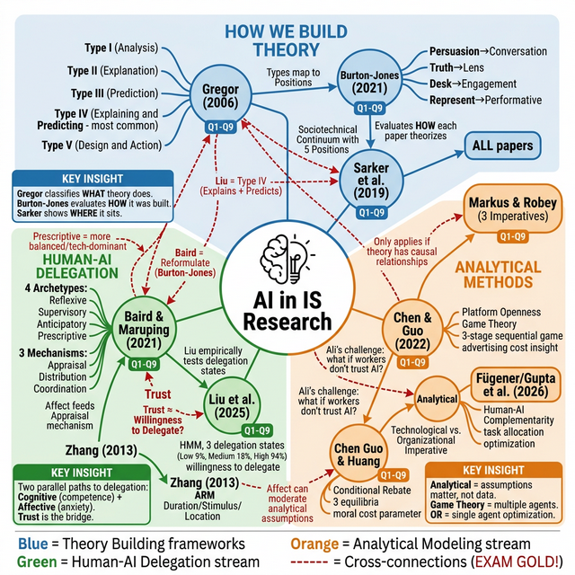
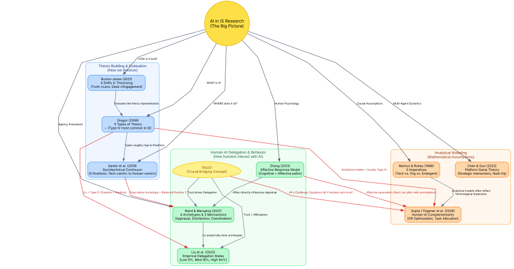
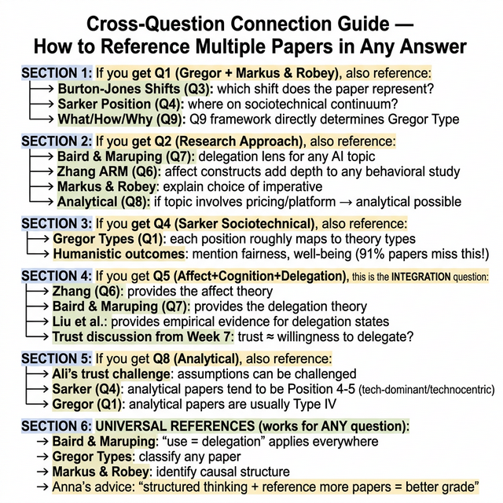
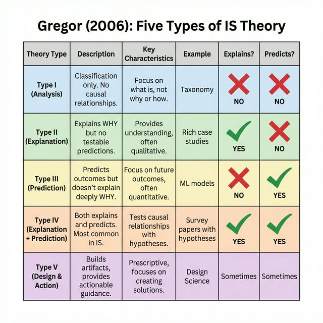
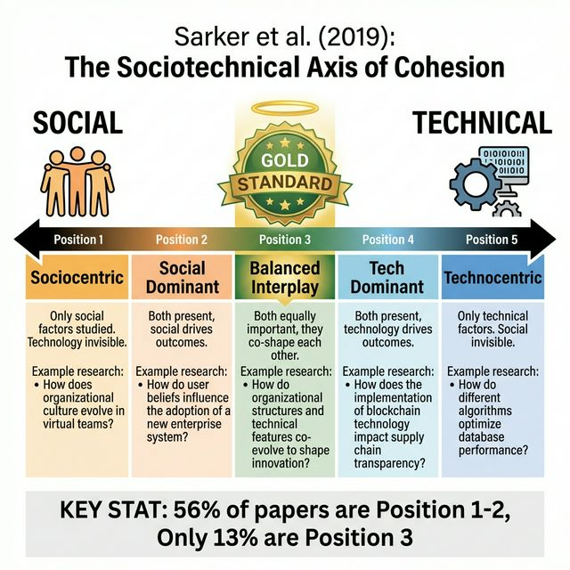
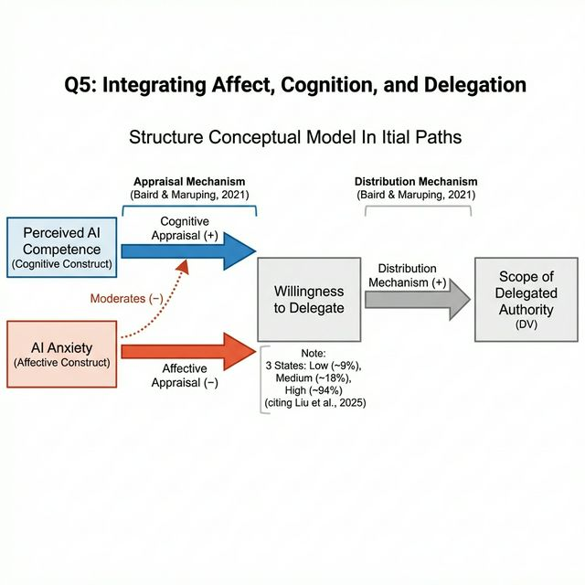
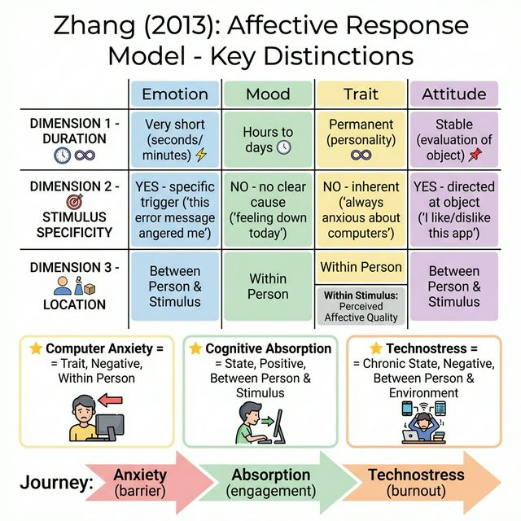
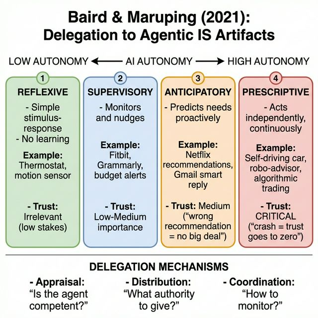

📘 BCIS 6670 Midterm Study Guide
📋 Exam Details (From Dr. Sidorova, Week 6 & 7)
- When: Tuesday, March 3, 2:00-4:50 PM (2 hours 50 minutes)
- Format: In-class with Lockdown Browser on university computers. Typing preferred. You can hand-draw figures on paper.
- Questions: Originally 8, now 9 total (she added Q9 in Week 7). She will pick 3 or 4 depending on difficulty. ~1 hour per question.
- Materials allowed: Any printed papers/articles/PDFs. You CAN share published manuscripts with classmates. You CANNOT use Gen AI or your own written work.
- Why Lockdown Browser: "I trust you, but I don't want the temptation." (Dr. Sidorova, Week 6)
- Comps warning: "This is NOT the luxury you will get on comps. On comps, you do the same thing but WITHOUT papers." (Week 6)
💡 Dr. Sidorova's Key Exam Advice (Week 7)
"I want you to think fast and creatively, but also in a structured way. The more papers from class you reference in your answers, even on a brand new topic, the better."— Dr. Sidorova, Week 7
The goal: Can you find a way, with any random topic, to weave in what we covered in class? She wants to see that you can connect things together.
For paper-analysis questions (Q1, Q3, Q8, Q9): You get ~30 min to skim the paper + ~30 min to write. You won't have time to read in detail.
Time pressure is real. "She recommends studying, not just relying on printed papers. Time will be tight, so you need to remember material too." (Week 6)
🎯 Anna's Final Exam Instructions (Week 7, End of Class)
"The questions that I will ask will be very high level. I gave you all the questions. I'll give you the exact specific topics. What I'm looking for is clear structured thinking and ability to draw on things we covered in this class."— Dr. Sidorova, Week 7
🧠 Create a MENTAL MAP: "For all those topics, see which papers you think you could reference per question and create a mental map." She described how she used to put huge pieces of paper on her apartment floor and draw constructs connected to other constructs, linking them to papers. Your mental map may be different from others — that's fine. The point is YOU created those connections, so you can remember them.
"ChatGPT can now read a paper. But can you truly develop those connections? That's what we'll try to do during the exam."— Dr. Sidorova, Week 7
📦 What to bring: "Whenever you want to print it, written, whatever, bring it up. You can bring cheat sheets as well. If you are going to create cheat sheets with all those mental models, bring them on." She even said if you make big cheat sheets with mental maps, that means you spent time learning — which is the whole point.
⏰ Time = your enemy: "Time pressure will be your worst enemy here. You'll have to actually focus and produce something in 3 hours." She specifically said: "I do not want you to feel that you will be able to put it in ChatGPT and say produce for me."
📝 Quality over quantity: "The quantity is not the answer, because frankly, I do not like reading that much. Good quality, focused answer."
🔗 What she really wants to see: "I want you to be able to draw on what we covered to make arguments, to formulate questions, to argue, and to develop new things." — Not memorization, but the ability to connect and build.
🧠 Mental Maps — How Everything Connects
Anna said: "Create a mental map. For all those topics, see which papers you could reference per question." These maps show how ALL course papers and frameworks interconnect across your 9 exam questions.
Map 1: Concept Map (AI Generated) — Three Streams of AI in IS Research

Visual AI representation of the course streams.
Map 2: Concept Map (Structured Code/Vector) — The Clean Academic View

Generated via Graphviz Code for 100% precision. Blue = Theory | Green = Behavior | Orange = Analytical | Red dashed = CROSS-CONNECTIONS (EXAM GOLD!)
🇮🇷 توضیح فارسی: چطور مقالات رو به هم وصل کنیم؟ (نقشه ذهنی)
۱. خوشه آبی (Theory Building - نظریهپردازی): این بخش پایهی همهچیزه. Gregor (Q1) میگه مقاله "چی" میگه (کدوم یکی از ۵ نوع؟). Burton-Jones (Q3) میگه این تئوری "چجوری" ساخته شده (مثلاً lens هست یا truth؟). Sarker (Q4) میگه این مقاله در پیوستار socio-technical "کجا" قرار میگیره. نکته طلایی: تقریبا هر مقالهای که میخونی رو میتونی با این سه تا چارچوب تحلیل کنی.
۲. خوشه سبز (Human-AI Delegation - واگذاری کار به هوش مصنوعی): این بخش روی رفتار انسان تمرکز داره. Baird & Maruping (Q7) چهار مدل (Archetype) برای کار با AI میده. اما انسان چطور تصمیم میگیره کار رو بسپاره؟ Zhang (Q6) میگه ما دو مسیر داریم: شناختی (عقل/صلاحیت) و احساسی (ترس/اضطراب). احساسات روی مکانیزم Appraisal (ارزیابی اولیه) تاثیر مستقیم میذارن. Liu (Q2/Q9) اومده همین مفاهیم رو به صورت تجربی تست کرده و نشون داده آدمها چقدر تمایل به Delegation دارن. نکته طلایی: بحث Trust (اعتماد) دقیقاً وسط این خوشه است — اعتماد پایه و اساس Willingness to Delegate هست.
۳. خوشه نارنجی (Analytical Methods - مدلسازی تحلیلی): این مقالات (مثلاً Chen & Guo و Gupta) با دیتا کار ندارن، بلکه با فرضیات (Assumptions) کار دارن. این خوشه به Markus & Robey (Q1) وصل میشه چون معمولاً نگاه Technological Imperative دارن (تکنولوژی X این کار رو میکنه پس خروجی Y میشه).
🔥 نکات طلایی اتصالات بین خوشهها (Cross-Connections) برای امتحان:
- وصل کردن Q4 (Sarker) به Q7 (Baird & Maruping): وقتی از Baird استفاده میکنی برای مدل Prescriptive یا Anticipatory، میتونی بگی این نشون میده مقاله در موقعیت ۳ (Balanced) یا ۴ (Tech-Dominant) از پیوستار Sarker قرار داره.
- وصل کردن Q1 (Gregor) به مقالات AI: مثلاً مدام تاکید کن که تستهای آماری Liu et al. از نوع Type IV (Explanation & Prediction) هستن، در حالی که چهارچوب مفهومی Baird & Maruping ممکنه Type I یا II (فقط طبقهبندی یا توضیح مکانیزم بدون پیشبینی رابطه ریاضی) باشه.
- وصل کردن Q8 (Analytical) به Q6 (Affect / Zhang) یا Trust: چالش خفن امتحان: همونطور که Ali سر کلاس گفت، میتونیم فرضهای مدل تحلیلی Gupta (که فرض میکنه آدمها ماشین رو منطقی قبول میکنن) رو با مفاهیم بخش سبز چلنج کنیم! (مثلاً اگر آدمها به خاطر ترس/Affect به AI اعتماد نکنند، probability of usage در مدل تحلیلی به شدت افت میکنه و کل معادلات Gupta به هم میریزه!). Anna صراحتاً گفت این بهترین شیوه برخورد با مقالات analytical هست: پیدا کردن نقطه ضعف فرضیاتشون از طریق تئوریهای رفتاری!
- وصل کردن Q3 (Burton-Jones) به Q1 (Markus & Robey): اگر مقالهای داره از Emergent Perspective حرف میزنه (تکنولوژی و سازمان هر دو همدیگه رو شکل میدن)، این به شدت با Shift 4 در Burton-Jones (Representational به Performative) همخوانی داره، چون هر دو روی "درهمتنیدگی مستمر" انسان و ماشین تاکید دارن.
Map 2: Cross-Question Connection Guide — How to Reference Multiple Papers in Any Answer

Print this! Use it during the exam to quickly find which papers to reference for each question.
🔗 Quick Navigation
Q1: Gregor's Classification + Markus & Robey
Evaluate theory development using Gregor + Markus & Robey frameworks
🇮🇷 خلاصه فارسی — نکات کلیدی Q1
این سوال مهمترین سوال امتحان هست. یه مقاله جدید که تا حالا ندیدی بهت میده و باید دو چیز رو مشخص کنی: نوع تئوری (Gregor) و علت تغییر (Markus & Robey).
Gregor (2006) — ۵ نوع تئوری: Type I (Analysis): فقط طبقهبندی میکنه، نه رابطهای داره نه پیشبینی. مثال: taxonomy شش نوع تحقیق IS از Sarker et al. Type II (Explanation): توضیح میده چرا یه چیزی اتفاق میفته ولی پیشبینی قابل تست نداره. مثل case study های عمیق. Type III (Prediction): پیشبینی میکنه ولی دلیل عمیق نمیده. مثال: مدلهای ML که دقیقن ولی توضیح ندارن. Type IV (EP — Explanation + Prediction): هم توضیح هم پیشبینی. رایجترین نوع! اکثر survey papers اینجان. فرمول: Hypothesis + Research Model + Data Testing. Type V (Design & Action): چیزی میسازه یا راهنمایی عملی میده. Design Science papers.
نکته طلایی برای تشخیص سریع: ✓ مقاله hypothesis (H1, H2...) داره؟ → احتمالا Type IV. ✓ مقاله فقط proposition یا framework داره بدون تست؟ → Type I یا Type II. ✓ مقاله ML model ساخته با accuracy بالا ولی توضیح مکانیزم نداره؟ → Type III. ✓ مقاله یه سیستم یا artifact ساخته؟ → Type V. ✓ مقاله rich case study با narrative هست؟ → Type II (process theory).
Markus & Robey (1988) — ۳ Imperative: Technological Imperative: تکنولوژی علت تغییره. انسان passive هست. مثال: "ERP باعث restructuring سازمانی شد." (تکنولوژی → تغییر). Organizational Imperative: انسان/سازمان تکنولوژی رو انتخاب و شکل میده. مثال: "مدیران IT رو برای حل مشکل X انتخاب کردن." (انسان → تکنولوژی). Emergent Perspective: نتیجه از تعامل پیچیده انسان و تکنولوژی بیرون میاد و قابل پیشبینی نیست. اکثر مقالات AI مدرن اینجان. مثال: "نتایج AI در hiring از تعامل بین الگوریتم، داده training، و نحوه استفاده HR بیرون اومد."
هشدار مهم Anna: اگه مقاله Type I باشه (فقط طبقهبندی، هیچ رابطهای نداره)، اصلا نمیتونی درباره Markus & Robey صحبت کنی! چون imperative فقط وقتی معنی داره که رابطه علّی وجود داشته باشه. Anna گفت: "اگه هیچ رابطهای نباشه، نه imperative داری نه variance/process."
Variance vs. Process Theory: Variance: X باعث Y میشه. survey، regression، experiment. مثال: "Perceived Usefulness → Adoption." Process: رویدادها به ترتیب زمانی اتفاق میفتن. case study، timeline، narrative. مثال: "مراحل adoption تکنولوژی در ۳ فاز." اگه Type I باشه → هیچکدوم نیست! اگه Type V باشه → ممکنه هر دو باشن.

Figure: Gregor (2006) — Five Types of IS Theory. Look for hypotheses (Type IV) vs. taxonomy (Type I) vs. artifact (Type V).
📖 Essay Overview & Exam Guide
This is probably the most important question on the exam. She gives you a paper you have never seen, and you have to figure out what kind of theory it is. The two main frameworks you use are Gregor (2006) and Markus and Robey (1988). Think of it as answering two separate questions about the same paper: "What TYPE of theory is this?" (Gregor) and "What DRIVES the change in this paper?" (Markus & Robey).
Gregor's 5 Types — How to Tell Them Apart: The key question is: does the paper explain WHY things happen, and does it make testable PREDICTIONS? Type I does neither (it is just a classification scheme, like Sarker et al.'s 6 types of IS research). Type II explains why but does not predict (think rich case studies that tell a story). Type III predicts but does not deeply explain why (think machine learning models that are accurate but opaque). Type IV does both — this is the most common type in IS because it has hypotheses, a research model, and causal explanations. Most survey papers are Type IV. Type V is design science — it tells you how to BUILD something.
Practical tip for fast classification: Look for hypotheses. If the paper has formal hypotheses (H1, H2, etc.) with a research model diagram, it is almost certainly Type IV. If it has no hypotheses but develops propositions or a framework, consider Type I or Type II. If it builds a system or artifact, it is Type V.
Markus & Robey's 3 Imperatives — Examples from Class: The technological imperative says technology drives change. Example: "Implementing ERP systems leads to organizational restructuring." The technology is the cause, the organizational change is the effect. The organizational imperative says managers strategically choose and shape technology. Example: "Management decided to adopt AI hiring tools to reduce bias." Here, human choice drives the technology selection. The emergent perspective says outcomes arise unpredictably from complex social interaction. Example: Liu et al. (2025) found that different managers developed completely different delegation patterns with the SAME AI system — some delegated 94% of tasks, others only 9%. The technology did not determine the outcome; the outcome emerged from the interaction.
Variance vs. Process — How to Decide: If the paper uses regression, SEM, or ANOVA with cross-sectional data, it is variance theory (X causes Y, how much). If the paper follows events over time, describes sequences, or uses case studies with temporal ordering, it is process theory (how things unfold). Important from Dr. Sidorova: if the paper is Type I (no relationships at all), you CANNOT discuss process vs. variance. State this explicitly in your answer: "Because this paper only classifies phenomena without proposing relationships, it is not appropriate to classify it as variance or process theory."
Model Exam Answer (if given a Type IV paper): "This paper is Type IV (Explanation and Prediction) according to Gregor's (2006) taxonomy. It has testable propositions (H1-H3), a research model with causal relationships, AND provides theoretical justification for why these relationships exist. According to Markus and Robey (1988), this paper follows the [emergent perspective] because [evidence]. The logical structure is [variance/process] theory because [evidence]. The level of analysis is [individual/organizational/mixed] because [evidence]. The paper is primarily [building/testing] theory because [evidence]."
Model Exam Answer (if given a Type I paper): "This paper is Type I (Analysis) according to Gregor (2006). It describes and classifies [phenomenon] into [categories] but does not propose causal relationships or make testable predictions. Because there are no directional relationships in this paper, I cannot classify it using Markus and Robey's causal imperatives — there is no directionality to categorize. Similarly, because there are no relationships between constructs, I cannot discuss whether this is variance or process theory. I can note that the level of analysis is [mixed/individual/organizational] because the classification scheme spans [levels]. This paper is building theory through taxonomy development."
⚠️ What Happens on the Exam (from Week 7 notes)
Dr. Sidorova will give you a paper you have never seen before. You will have about 30 minutes to skim the paper and 30 minutes to write. You need to identify:
- What kind of theory is it? (Gregor's taxonomy: Type I through V)
- Is it building theory or testing theory?
- According to Markus and Robey: what is the causal imperative? If there is no directionality, you cannot even talk about imperative. You have to be able to say that.
- What is the level of analysis?
- Is it process theory or variance theory? If it has no relationships, you cannot talk about process vs variance. You only talk about level of analysis.
- If it is theory for describing (Type I), it will often have mixed levels of analysis.
Part A: Gregor's Taxonomy of Theory (Gregor, 2006, MISQ)
Gregor identifies 5 types of theory in IS, classified by their primary goal:
| Type | Name | What It Does | Key Features | How to Spot It |
|---|---|---|---|---|
| I | Analysis | "Says what is." Describes and classifies phenomena. No causal claims, no predictions. | Taxonomies, typologies, classification schemes. Often mixed levels of analysis. | Paper creates categories or frameworks without testing relationships. No hypotheses. |
| II | Explanation | "Says what is, how, why, when, where." Explains how and why things happen. | Has causal explanations but no testable propositions. Often qualitative/interpretive. | Paper tells a rich story of why something happened (case study, grounded theory) but doesn't predict. |
| III | Prediction | "Says what is and what will be." Predicts outcomes but doesn't deeply explain why. | Testable predictions but weak on justificatory causal explanations. | Statistical/ML models that predict well but don't explain the "why" (e.g., neural networks). |
| IV | Explanation & Prediction (EP) | "Says what is, how, why, when, where, and what will be." Both causal explanation AND testable hypotheses. | The most "complete" form. Has construct models, hypotheses, empirical tests. | Most common in positivist IS research. If you see hypotheses + causal model, it's Type IV. |
| V | Design & Action | "Says how to do something." Gives prescriptions for building artifacts. | Design principles, methods, techniques, meta-requirements. | Design Science Research (DSR). Paper creates and evaluates an IT artifact or design theory. |
Structural Components of Theory (Gregor, 2006, Table 3)
| Component | Required For | Description |
|---|---|---|
| Means of Representation | All types | Words, math, diagrams, symbolic logic |
| Constructs | All types | The primary phenomena of interest (e.g., "perceived ease of use") |
| Statements of Relationship | All types | How constructs relate (associative, compositional, causal) |
| Scope | All types | Boundaries and degree of generality |
| Causal Explanations | Type II, IV | Why relationships exist |
| Testable Propositions (Hypotheses) | Type III, IV | Hypotheses that can be empirically tested |
| Prescriptive Statements | Type V | "Recipes" for building artifacts |
Part B: Markus & Robey (1988, Management Science)
Analyze the paper along 3 dimensions:
Dimension 1: Causal Agency (Who/what drives change?)
| Perspective | Directionality | Core Assumption | How to Spot It |
|---|---|---|---|
| Technological Imperative | IT → Org Change | Technology is an exogenous force that determines or strongly constrains behavior. Action is dictated by external constraints. | Paper uses word "impact." Claims specific IT features lead to predictable outcomes. Technology "causes" organizational effects. |
| Organizational Imperative | Managers → IT → Org Change | Technology is a tool designed by humans to satisfy organizational needs. Managers have almost unlimited choice over technology. | Focuses on "design" and "strategic choice." Management is the primary agent of change. |
| Emergent Perspective | People + Context + Tech → Outcomes | Uses and consequences of IT emerge unpredictably from complex social interaction. Neither tech nor managers fully explain outcomes. | Acknowledges same tech leads to different outcomes in different settings. Focus on social meaning, context. |
Dimension 2: Logical Structure
| Type | Focus | Logic | Time | Example |
|---|---|---|---|---|
| Variance | How much (degree of outcome) | X is necessary and sufficient for Y | Static/cross-sectional | Survey measuring "IT investment → firm performance" |
| Process | How and why over time | X is necessary but not sufficient; sequence matters | Longitudinal; order of events is critical | Case study of how ERP implementation unfolded |
Dimension 3: Level of Analysis
Micro (individuals, small groups) → Macro (organizations, industries, society) → Mixed (cross-level bridges). Watch for cross-level fallacies.
💡 Process vs. Variance Quick Decision Tree
Variance theories explain the amount/degree of outcome based on predictor variables. Process theories explain how events unfold over time in sequence. If a paper has no relationships at all (Type I), you cannot talk about process vs. variance. State this clearly on the exam.
⚠️ Critical Exam Tips for Q1 (from Dr. Sidorova, Week 7)
- If the paper is Type I (descriptive, no relationships), you cannot talk about an imperative. State this clearly: "Because there is no directionality in this paper, I cannot classify it using Markus & Robey's imperatives."
- If the paper has no relationships, you cannot talk about process vs. variance. Only talk about level of analysis.
- If it is theory for describing (Type I), it will often have mixed levels of analysis.
- Always state what you CAN'T say — showing what does NOT apply demonstrates deeper understanding.
📝 Template: How to Write Your Q1 Answer
- Gregor classification: "This paper is Type [X] because [evidence]. It says [what is / what will be / how to do something]."
- Causal agency: "According to Markus & Robey, this paper follows the [imperative] because [directionality evidence]." OR "Because this paper has no directional relationships, I cannot classify it using M&R's imperatives."
- Logical structure: "This is a [variance/process] theory because [time/logic evidence]." OR "Because this paper has no relationships, I cannot discuss process vs. variance."
- Level of analysis: "The level of analysis is [individual/org/mixed] because [evidence]."
- Theory building vs. testing: "This paper [builds/tests] theory because [evidence]."
Gregor, S. (2006). The nature of theory in information systems. MIS Quarterly, 30(3), 611-642. | Markus, M. L., & Robey, D. (1988). Information technology and organizational change. Management Science, 34(5), 583-598.
Q2: Research Approach + Theoretical Perspective + Research Design
Given a topic, what research approach would you use? Why?
🇮🇷 خلاصه فارسی — نکات کلیدی Q2
بهت یه topic میده (مثلا "trust in AI hiring" یا "algorithmic decision making") و باید بگی چه نوع تحقیقی انجام میدی، چه تئوری استفاده میکنی، و چطور طراحی میکنی.
قدم ۱ — نوع تحقیق رو انتخاب کن: ✓ میخوای رابطه بین متغیرها رو اندازه بگیری؟ → Positivist (survey, experiment). Gregor Type IV. ✓ میخوای بفهمی یه فرایند پیچیده چطور کار میکنه؟ → Interpretive (case study, interviews). Gregor Type II. ✓ میخوای چیز جدیدی بسازی؟ → Design Science. Gregor Type V. ✓ میخوای استراتژی بهینه پیدا کنی؟ → Analytical Modeling. Gregor Type IV ریاضی. Anna هفته ۶ درباره positivist گفت: "فرض میکنیم واقعیت وجود داره و عینی هست. اون رو با construct ها توصیف میکنیم و رابطه بین construct ها واقعا وجود داره و قابل اندازهگیریه."
قدم ۲ — حتما به مقالات کلاس وصلش کن! Anna صراحتا گفت: "هرچی بیشتر مقالات کلاس رو reference بدید، حتی روی topic کاملا جدید، نمره بهتری میگیرید." Human-AI interaction → Baird & Maruping (delegation: appraisal, distribution, coordination). احساسات و UX → Zhang (ARM: affect vs. cognition parallel paths). نقش تکنولوژی در سازمان → Markus & Robey (emergent perspective) یا Sarker et al. (sociotechnical continuum). رقابت platform یا pricing → مقالات analytical هفته ۷ (Chen & Guo, Chen Guo & Huang).
قدم ۳ — طراحی تحقیق رو خیلی specific بنویس: نگو «survey میزنم»! بگو: "N=300 متخصص IT که با AI decision support کار میکنن. IV: perceived AI competence (5 آیتم از Venkatesh et al.). DV: scope of delegation (درصد تصمیماتی که به AI واگذار میشه). Moderator: task complexity. Analysis: PLS-SEM." برای interpretive بگو: "15-20 مصاحبه نیمهساختاریافته (semi-structured) با مدیرانی که کنار AI کار میکنن. Theoretical sampling. Thematic analysis. Using Baird & Maruping as sensitizing lens." برای analytical بگو: "بازی دو نفره بین طراح AI و اپراتور انسانی. طراح accuracy maximize میکنه. اپراتور risk minimize میکنه. Nash Equilibrium."
مثال Topic: AI-driven hiring: Positivist: "perceived fairness چطور organizational attractiveness رو تحت تاثیر قرار میده؟ Experiment: AI vs. human screening." Interpretive: "HR managers چطور AI recommendations رو معنادار میکنن؟ Emergent perspective از Markus & Robey. 15 مصاحبه در 3-4 سازمان."
📖 Essay Overview & Exam Guide
This question tests whether you can think like a researcher. She gives you a topic and you have to propose a research approach, a theoretical perspective, and a research design. The key is matching the nature of the question to the right methodology AND connecting everything back to papers from class.
Step 1 — Read the topic and decide what kind of knowledge you need: Are you trying to measure relationships and test hypotheses? Go positivist (survey or experiment, Gregor Type IV). Are you trying to understand a complex process in context? Go interpretive (case study, interviews, Type II). Are you trying to build a solution? Go design science (Type V). Are you trying to find optimal strategies? Go analytical modeling (Type IV mathematical).
Step 2 — Pick a theoretical lens from class readings: This is where you score points. Dr. Sidorova said "the more papers from class you reference, even on a brand new topic, the better." Whatever topic she gives you, connect it to class. If it involves human-AI interaction or decision making, use Baird & Maruping's delegation framework (appraisal, distribution, coordination). If it involves emotions or user experience, bring in Zhang's Affective Response Model. If it is about the role of technology in organizations, use Markus & Robey's three perspectives or Sarker et al.'s sociotechnical continuum. If it involves platform strategy or pricing, reference Week 7 analytical papers.
Step 3 — Sketch a concrete research design: Don't just say "I will do a survey." Be specific. For positivist: "I will survey N=300 IT professionals who use AI decision support tools. IV: perceived AI competence (measured using 5 items adapted from Venkatesh et al.). DV: scope of delegation (measured as percentage of decisions delegated to AI). Moderator: task complexity. Analysis: moderated regression or PLS-SEM." For interpretive: "I will conduct 15-20 semi-structured interviews with managers who work alongside AI systems, using theoretical sampling and thematic analysis. I will use Baird and Maruping's delegation framework as a sensitizing lens." For analytical modeling: "I define a two-player game between the AI system designer and the human operator. The designer maximizes overall accuracy. The operator minimizes personal risk. I solve for Nash equilibrium."
Example — Topic: "AI-driven hiring tools":
Positivist approach: "How does the perceived fairness of AI hiring tools affect applicants' organizational attractiveness perceptions? I use justice theory as my lens, and conduct an experiment manipulating AI vs. human screening decisions. DV: organizational attractiveness. This is Type IV theory because I explain why (fairness theory) and predict what (specific hypotheses)."
Interpretive approach: "How do HR managers experience and make sense of AI recommendations in hiring? Using Markus and Robey's emergent perspective, I expect outcomes depend on complex interaction between AI recommendations and managers' professional identity. I would do 15 semi-structured interviews at 3-4 organizations, analyzed using thematic analysis."
Model Exam Answer: "Given the topic [X], I would use a [positivist/interpretive/design science/analytical] approach because [specific justification]. My theoretical lens is [framework from class] because [connection to topic]. Research design: [specific method, sample, variables, analysis]. This represents Gregor's Type [IV/II/V] theory because [it tests hypotheses / it explains a process / it builds an artifact]."
📝 What Happens on the Exam (Week 7)
Dr. Sidorova will give you a topic. It could be something discussed in class or related to one of the papers we read. She might also give you a couple of papers with the topic. Then you create research questions according to whatever framework she asks.
Step 1: Identify the Nature of the Question
| If the RQ asks... | Use this approach | Gregor Type |
|---|---|---|
| "What is the relationship between X and Y?" / "To what extent..." | Positivist / Quantitative (Survey or Experiment) | Type IV (EP) |
| "How does X unfold?" / "Why does Y happen in this context?" | Interpretive / Qualitative | Type II |
| "How can we build/design..." / "How do we solve [problem]..." | Design Science Research (DSR) | Type V |
| "What is the optimal..." / "Under what conditions..." | Analytical Modeling | Type IV (mathematical) |
Step 2: Pick a Theoretical Perspective (from class readings)
| Topic Area | Theory to Use | Citation |
|---|---|---|
| AI delegation, human-AI teaming | Delegation Framework (appraisal, distribution, coordination) | Baird & Maruping (2021) |
| Dynamic delegation over time | Agentic System Delegation + Instance-Based Learning | Liu et al. (2025), Gonzalez et al. (2003) |
| Trust in technology | Trust theory, Trust calibration | Lewicki & Bunker, Lee & See, Mayer et al. |
| User emotions, affect | Affective Response Model (ARM) | Zhang (2013) |
| Technology impact on orgs | Markus & Robey causal structures | Markus & Robey (1988) |
| IS success, adoption | DeLone & McLean IS Success, TAM/UTAUT | D&M (2003), Venkatesh |
| Sociotechnical perspective | Axis of cohesion, 5 positions | Sarker et al. (2019) |
| Platform economics/pricing | Game Theory, Analytical Modeling | Chen & Guo (2022), Week 7 papers |
| AI automation vs. augmentation | Task allocation framework | Fugener et al. (2026) |
Step 3: Propose Research Design
For Positivist (Survey/Experiment):
- Define IV (independent), DV (dependent), moderators/mediators
- Sampling: "I will survey N=300 IT professionals..."
- Measurement: Validated scales from literature
- Analysis: SEM, regression, ANOVA
For Interpretive (Case Study/Interviews):
- "I will conduct semi-structured interviews with [participants]..."
- Theoretical sampling, thematic analysis or grounded theory
- Evidence: Rich descriptions, quotes, patterns
For DSR (Build & Evaluate):
- "I will develop artifact X based on design principles Y..."
- Evaluate using: lab experiment, field study, or expert review
- Kernel theories provide the theoretical foundation
For Analytical Modeling:
- Define objective function, decision variables, parameters, constraints
- Derive propositions mathematically; test with data if available
- From Week 6: "Theories derived through analytical modeling are then tested empirically with large datasets using econometric models." (Anna)
💡 From Week 6 Class: Positivist Approach Summary
Anna summarized: "We assume reality exists and is objective. We describe that reality in terms of constructs. Relationships between constructs truly exist (not socially constructed). There are underlying mechanisms that can be observed. Therefore, we can hypothesize and test hypotheses. This is the hypothetico-deductive method."
⚠️ Exam Strategy
Always connect the theoretical perspective to a specific paper from class. Dr. Sidorova wants you to weave in class readings, even on a brand new topic. Connect everything back.
Research approaches covered throughout course. Key references: Gregor (2006), Markus & Robey (1988), Sun et al. (2024) on Novelty/Rigor/Relevance.
Q3: Next-Generation Theorizing Shifts (Burton-Jones et al., 2021)
Analyze a paper through Burton-Jones's 4 shifts
🇮🇷 خلاصه فارسی — نکات کلیدی Q3
Burton-Jones et al. (2021): ۴ shift در نحوه تئوریسازی. مقاله رو سر امتحان کنارت داری، پس اصطلاحات دقیق رو استفاده کن!
Shift 1: Persuasion → Conversation قدیم: تئوری من حرف آخره، همه باید قبول کنن. جدید: تئوری من بخشی از یه گفتگوی مداومه، دعوت به نقد و توسعه. چطور تشخیص بدی: اگه نوشته "our model comprehensively captures..." = persuasion. اگه نوشته "we offer this as one perspective..." = conversation. مثال: Baird & Maruping = conversation (صراحتا میگن هر archetype رو جداگانه بررسی کنید). Gregor = conversation (taxonomy رو به عنوان نقطه شروع ارائه میده).
Shift 2: Truth/Reflection → Lens قدیم: تئوری خوب واقعیت رو مثل آینه منعکس میکنه. جدید: هر تئوری فقط یه عدسی هست، عدسیهای دیگه هم وجود دارن. مثال: Zhang ARM = truth (ادعا میکنه landscape عاطفی رو کامل نقشهبرداری کرده). Sarker et al. = lens (از مفهوم Abbott فقط به عنوان یه نگاه استفاده میکنن).
Shift 3: Desk Work → Reflective Engagement قدیم: فقط از خوندن مقالات دیگه تئوری ساختن (armchair theorizing). جدید: از درگیری با دنیای واقعی الهام گرفتن. مثال: Liu et al. (2025) = engagement (تئوری از داده واقعی ۹۰۰ مدیر فروشگاه بیرون اومد). Baird & Maruping = desk work (مقاله مفهومی، ولی ارزشمند).
Shift 4: Representational → Performative قدیم: تئوری فقط دنیا رو توصیف میکنه. جدید: تئوری دنیا رو هم تغییر میده. وقتی محققان IS مدل TAM رو ساختن، واقعا نحوه adopt کردن تکنولوژی در سازمانها عوض شد. مثال: Baird & Maruping "IS use" رو "delegation" بازتعریف کردن → performative چون نحوه فکر کردن محققان و practitioners درباره AI عوض میشه.
۴ نوع Contribution (حفظ کن!): Replace: تئوری قدیم حذف، تئوری جدید جایگزین (مثل Media Synchronicity جای Media Richness). Reformulate: همون پدیده، ولی از زاویه جدید (مثل Baird & Maruping: "use" رو "delegation" کردن). Envision: تئوری جدید برای پدیده کاملا جدید (مثل تئوریهای مربوط به AI agents). Extend: گسترش تئوری موجود به context جدید (مثل extend کردن trust theory از انسان به AI).
📖 Essay Overview & Exam Guide
Burton-Jones et al. (2021) is about how IS theorizing should evolve. The paper proposes four "shifts" from old ways to new, better ways. Dr. Sidorova said you will have the Burton-Jones paper next to you during the exam, so you can reference the exact terminology.
Shift 1: Persuasion vs. Conversation. Old: your theory is the final word, you try to convince everyone. New: your theory is part of an ongoing dialogue, you invite critique and extension. How to spot it: Does the paper say "our model captures the complete picture" (persuasion) or "we offer this as one perspective that future researchers can build upon" (conversation)? Example: Baird and Maruping (2021) is more "conversation" because they explicitly invite researchers to explore each archetype separately. Gregor (2006) is also "conversation" because she presents a classification knowing others may refine it.
Shift 2: Truth/Reflection vs. Lens. Old: good theory perfectly mirrors reality. New: every theory is just one useful lens among many. Example: Zhang (2013) is more "truth" because the ARM claims to comprehensively map the affective landscape. Sarker et al. (2019) is more "lens" because they use Abbott's concept as one particular way of viewing IS identity, not the only way.
Shift 3: Desk Work vs. Reflective Engagement. Old: theory built entirely from reading other papers (armchair theorizing). New: theory informed by engaging with real-world practice. Example: Liu et al. (2025) is strong on engagement because their theory emerged from actual field data with 900 store managers. A pure conceptual paper like Baird and Maruping is more "desk work" (though valuable desk work).
Shift 4: Representational vs. Performative. Old: theory only describes the world. New: theory also shapes and changes the world. Example: When IS researchers created TAM, it actually changed how practitioners design technology adoption programs. The theory became performative. Baird and Maruping's reframing of "IS use" as "delegation" is performative because it changes how researchers and practitioners think about human-AI workplaces.
Four Contribution Types (What to Write): Replace (old theory replaced by new for same phenomenon, like Media Synchronicity replacing Media Richness). Reformulate (same phenomenon but new framing, like Baird and Maruping reframing IS Use as Delegation). Envision (new theory for new phenomena, like theories about AI agents or blockchain). Extend (expanding existing theory, like extending trust theory from humans to AI).
Model Exam Answer: "For each of Burton-Jones et al.'s (2021) four shifts: (1) Persuasion vs. Conversation: This paper is more [conversation/persuasion] because [the authors explicitly acknowledge limitations and invite future research / the authors present model as definitive]. (2) Truth vs. Lens: This paper takes a [truth/lens] approach because [claims full picture / acknowledges one perspective among many]. (3) Desk work vs. Engagement: More [desk work/engagement] because [purely conceptual / emerges from empirical observation]. (4) Representational vs. Performative: This paper is [representational/performative] because [only describes / reconceptualization likely to change how people think about the topic]. Overall contribution type: This paper is a [Replace/Reformulate/Envision/Extend] because [specific evidence]."
📝 What Happens on the Exam (Week 7)
"You will have the Burton-Jones paper next to you. You need to assess whether the paper is more of a 'theory as reflection of reality' or 'theory as lens' approach. Is it conversation or persuasion? All of those elements from Burton-Jones." (Dr. Sidorova)
The 4 Shifts in Theorizing
| # | Old Way | New Way (Next-Gen) | What to Look For in the Paper |
|---|---|---|---|
| 1 | Theory as persuasion (convince others your theory is right) | Theory as conversation (invite debate, acknowledge limitations) | Does the paper acknowledge competing views? Does it invite future researchers to challenge? Or does it try to be the final word? |
| 2 | Theory as truth/reflection of reality (mirror image) | Theory as lens (purposeful perspective, one of many) | Does the paper aim to perfectly capture reality? Or does it acknowledge it is one perspective among many? |
| 3 | Theory as purely desk work (armchair theorizing) | Theory as reflective engagement (engagement with real-world practice) | Was theory developed only from reading other papers? Or from active field engagement, practice, observation? |
| 4 | Theory as purely representational (just describes the world) | Theory as performative (theory helps shape/produce reality) | Does the theory only describe? Or does it also produce new practices, tools, or ways of organizing? Does the theory change what it studies? |
4 Theorizing Strategies (Types of Contribution)
| Strategy | What It Does | Example from Class |
|---|---|---|
| Replace | New theory replaces old theory for existing phenomena | Media Synchronicity replacing Media Richness Theory |
| Reformulate | Unpack and alter existing theories for new insights | Baird & Maruping reformulated "IS Use" into "Delegation" — same phenomenon, new framing |
| Envision | New theory for new phenomena (that didn't exist before) | Design theories for emergent AI processes, agentic IS |
| Extend | Significantly expand existing theories | Extending identity theories to IT Identity, extending trust to AI trust |
⚠️ Template: How to Write Your Q3 Answer
- For each of the 4 shifts, state whether the paper is more on the "old" or "new" side
- Give evidence (quotes or structural elements from the paper) for each classification
- Then classify the overall contribution type: Replace, Reformulate, Envision, or Extend
- Justify with specific examples from the paper
💡 Example Application: Baird & Maruping (2021)
- Shift 1: More "conversation" — they invite future researchers to explore each archetype
- Shift 2: More "lens" — they offer a new perspective on IS use, not claiming to capture all reality
- Shift 3: More "desk work" — conceptual paper, not from field engagement
- Shift 4: "Performative" — their reconceptualization of IS use as delegation actively changes how we study human-AI interaction
- Strategy: Reformulate — same phenomenon (IS use) but fundamentally reframed as delegation
Burton-Jones, A., et al. (2021). How can IS research contribute to next generation theorizing? MIS Quarterly, 45(2).
Q4: IS Discipline on the Socio-Technical Continuum
Explain 5 positions and propose RQs for each
🇮🇷 خلاصه فارسی — نکات کلیدی Q4
Sarker et al. (2019): بهت topic میده و باید برای هر ۵ position روی محور sociotechnical یه RQ بنویسی. اینجا باید نشون بدی یه topic رو از ۵ زاویه مختلف میتونی بررسی کنی.
چرا مهمه (مشکل هویتی IS): از ۷۰۳ مقاله MISQ و ISR (2000-2016)، ۵۶% فقط social بودن (تکنولوژی فقط زمینه بود، Type I). فقط ۱۳% balanced بودن (Type IV). Sarker et al. میگن: اگه ما فقط social science انجام بدیم بدون اینکه واقعا با تکنولوژی درگیر بشیم، چه فرقی با روانشناسی سازمانی یا جامعهشناسی داریم؟ "axis of cohesion" رشته IS = تعامل social و technical.
۵ Position (از چپ به راست روی محور): 1️⃣ Sociocentric (Type I): فقط بُعد اجتماعی. تکنولوژی نامرئیه یا فقط backdrop. مثال: "AI chatbot چطور روی هویت حرفهای کارمندان تاثیر میذاره؟" — chatbot فقط context هست. 2️⃣ Social Dominant (Type II): هر دو هست ولی عوامل اجتماعی غالبن و تکنولوژی secondary هست. مثال: "تجربه قبلی و ریسکپذیری کارمندان چطور willingness to collaborate رو تحت تاثیر قرار میده؟" 3️⃣ Balanced Interplay (Type IV) = GOLD STANDARD: هر دو بُعد به یه اندازه مهمن و همدیگه رو shape میکنن. کلمه کلیدی: "co-shape"، "mutual"، "co-evolve". مثال: "چطور AI chatbot و کارمندان در طول زمان co-shape میکنن و همزمان service quality و well-being رو تحت تاثیر قرار میدن؟" 4️⃣ Tech Dominant (Type V): هر دو هست ولی تکنولوژی محرک اصلیه. مثال: "چطور ویژگیهای NLP (sentiment detection, context retention) رضایت مشتری رو تعیین میکنن؟" 5️⃣ Technocentric (Type VI): فقط فنی. بُعد اجتماعی اصلا مطالعه نمیشه. مثال: "چطور معماری transformer رو برای accuracy بهتر بهینه کنیم؟"
فراموش نکن — Humanistic Outcomes! ۹۱% مقالات فقط instrumental outcomes مطالعه کرده بودن (سود، کارایی، بهرهوری). Sarker et al. میگن حداقل یه RQ با humanistic outcomes بنویس: well-being، fairness، ethics، dignity، autonomy. مثال Position 3 بالا این رو داره: "well-being" کنار "service quality".
فرمول جواب برای هر position: "Position [N] ([label]): RQ: [سوال تحقیقاتی]. This falls at Position [N] because [social/technical/both] is primary, relationship between social-technical is [absent/one-way/mutual]. Type [I-VI]."

Figure: Sarker et al. (2019) — Sociotechnical Axis of Cohesion. Position 3 (Balanced) is the gold standard. 56% of papers sit at Position 1-2.
📖 Essay Overview & Exam Guide
This question is based on Sarker et al. (2019). She gives you a topic and asks you to create a research question for each of the 5 positions on the sociotechnical continuum. The main idea: IS as a discipline exists at the intersection of social and technical, and our unique value is studying how people and technology interact.
Why this matters (the problem): When they analyzed 703 papers from MISQ and ISR (2000-2016), 56% were purely social (Type I), technology was a black box. Only 13% were truly balanced (Type IV). If IS researchers mostly do social science without engaging with technology, we are indistinguishable from organizational behavior or psychology.
The 5 positions (imagine a slider from Social to Technical): Position 1 (Sociocentric): only social, tech invisible. Position 2 (Social dominant): both present but social drives. Position 3 (Balanced interplay, GOLD STANDARD): both equally important, they shape each other. Position 4 (Tech dominant): both present but tech drives. Position 5 (Technocentric): only technical, social invisible. Key insight: the SAME topic can be studied from ANY of these 5 positions. What changes is your focus and your research question.
Concrete Example — Topic: "AI chatbots in customer service":
Position 1 (Sociocentric): "How does the introduction of AI chatbots change the professional identity and job satisfaction of human CS agents?" — Chatbot is just context, focus is entirely on the humans.
Position 2 (Social dominant): "How do CS agents' prior experience and risk tolerance affect their willingness to collaborate with AI chatbots?" — Both present, but human factors drive outcome.
Position 3 (Balanced, GOLD STANDARD): "How do the evolving capabilities of AI chatbots and the changing work practices of CS agents co-shape service quality and employee well-being over time?" — Both equally important and mutually influence each other. The word "co-shape" signals mutual interaction.
Position 4 (Tech dominant): "How do specific NLP features (sentiment detection, context retention, response speed) determine customer satisfaction and first-call resolution?" — Technology drives outcomes, social is present but reactive.
Position 5 (Technocentric): "How can transformer architectures be optimized to improve chatbot response accuracy in multi-turn conversations?" — Pure technical. No social dimension studied.
Don't forget humanistic outcomes: 91% of papers focused only on instrumental outcomes (efficiency, profit). Include at least one RQ with humanistic outcomes (well-being, fairness, ethics). The Position 3 example does this: "employee well-being" alongside "service quality."
Model Exam Answer for each position: "Position [N] ([label]): RQ: [question]. This falls at Position [N] on Sarker et al.'s (2019) continuum because [social/technical/both equally] is the primary focus, and the relationship between social and technical is [absent / one-way from social / mutual co-shaping / one-way from tech / absent]. This corresponds to their Type [I-VI] IS research."
Based on Sarker et al. (2019). Given a topic, explain the 5 positions and create a research question for each position.
The Concept: Axis of Cohesion (from Abbott, 2001)
Abbott argued every discipline needs an "axis of cohesion" — a shared frame that provides common language, research orientation, and shared assumptions. He used the term to describe what holds a field together as a single discipline rather than fragmenting into sub-fields.
For IS, this axis is the sociotechnical perspective: the interaction between people and technology. Without this, IS would fragment into either "Management" or "Computer Science." Sarker et al. argue IS must defend its core identity as the discipline that studies this interaction.
⚠️ The Problem: IS Is Drifting (from the paper)
Sarker et al. analyzed 703 papers from MISQ and ISR (2000-2016). Results were alarming:
- Type I (Purely Social): 56% of all papers 😨 — IT is just a "black box" or nominal context
- Type IV (Balanced Interplay): Only 13% — this is the "Gold Standard" but rarely done!
- Type VI (Purely Technical): Only 7% — just building systems, no user theory
- 91% focused only on instrumental outcomes (efficiency, profit, ROI); only 2% focused solely on humanistic outcomes (well-being, fairness, ethics)
From Ali's Week 2 notes: "Research shouldn't just be 'How to make more money with AI,' but 'How to make AI good for people.'"
The 6 Research Types (mapped to 5 continuum positions)
| Type | Name | Focus | Position on Continuum |
|---|---|---|---|
| I | Predominantly Social | Social/psychological; IT is just nominal context, a "black box" | Position 1: Sociocentric |
| II | Social Imperative | Both present; social is primary driver of change | Position 2: Shared with Social |
| III | Additive | Both present; no interplay, effects simply added together | |
| IV | Interplay | Both present; co-evolution and mutual shaping | Position 3: Balanced (Gold Standard) |
| V | Technical Imperative | Both present; technical is primary driver of change | Position 4: Shared with Technical |
| VI | Predominantly Technical | Technical only; social is background/ignored | Position 5: Technocentric |
Instrumental vs. Humanistic Outcomes
| Instrumental Outcomes | Humanistic Outcomes |
|---|---|
| Efficiency, productivity, profit, ROI, competitive advantage, task performance | Job satisfaction, quality of work life, well-being, ethics, human dignity, fairness, empowerment |
Template: How to Create RQs for Each Position
Replace [Topic] with the exam's given topic (e.g., "Agentic AI in Healthcare")
| Position | RQ Template | What Makes It This Position |
|---|---|---|
| 1. Sociocentric | "How does the introduction of [Topic] shift the power dynamics, politics, or professional identity within organizational teams?" | IT is just background context. Focus is entirely on social/psychological phenomena. |
| 2. Social Dominant | "How do employees' pre-existing trust levels and risk tolerance affect their willingness to adopt [Topic]?" | Both social and tech present, but human behavior drives the outcomes. Tech is secondary. |
| 3. Balanced Interplay | "How do the technical capabilities of [Topic] and the work practices of professionals co-evolve and mutually shape organizational outcomes over time?" | This is Type IV — the Gold Standard. Both social and tech are equally important and shape each other. |
| 4. Tech Dominant | "How do the specific algorithmic features of [Topic] determine changes in user task efficiency and decision quality?" | IT features are the primary driver. Social is present but reactive. |
| 5. Technocentric | "How can the architecture and algorithms of [Topic] be optimized to improve processing accuracy and throughput?" | Pure technical. No social aspect studied at all. |
💡 Sarker et al.'s Recommendation — What to Write on Exam
IS needs more Type IV research (balanced interplay) and more research on humanistic outcomes. Always mention this in your answer. It shows you understand the paper's call to action.
From Week 2 notes: "We need 'Entanglement' (Orlikowski) — treating social and tech as inseparable."
Sarker, S., et al. (2019). The sociotechnical axis of cohesion for the IS discipline. MIS Quarterly, 43(3), 695-720.
Q5: Combine Affective + Cognitive Constructs + Delegation Framework
Propose RQ and research model combining all three
🇮🇷 خلاصه فارسی — نکات کلیدی Q5
سه stream رو ترکیب کن و یه research model بساز: Affect (Zhang, 2013) + Cognition + Delegation (Baird & Maruping, 2021).
ایده اصلی — دو مسیر موازی به سمت delegation: وقتی آدمها تصمیم میگیرن آیا یه کار رو به AI بدن، هم از عقلشون (cognition) هم از احساسشون (affect) استفاده میکنن. Cognition: "فکر میکنم این AI با ۹۰% دقت کار میکنه بر اساس دادههای عملکرد." Affect: "حس ناراحتی و اضطراب دارم از اینکه این AI به جای من تصمیم بگیره." Zhang (2013) در ARM ثابت کرد اینا مسیرهای موازی به رفتار هستن، نه یه چیز. یعنی میتونی فکر کنی AI عالیه (high competence) ولی همزمان بترسی ازش (high anxiety)، و ترس ممکنه مانع delegation بشه.
مهمترین بحث کلاس — Trust vs. Delegation (Anna هفته ۶، ۲۰ دقیقه): Trust تعریفش هست: "willingness to make yourself vulnerable" (Mayer et al., 1995). Willingness to delegate: دادن authority به AI و قبول کردن نتایجش. Anna گفت: "اگه در مدل Liu et al. جای willingness to delegate بذاری learned trust، تعریفها تقریبا یکسان میشن." خیلی مهم: "وقتی هر مقالهای رو میخونید، ممکنه تعریف یه construct با construct های literature های دیگه overlap داشته باشه. Reviewer حتما میپرسه: How is this different from X?" استدلال دانشجوی کلاس: "Trust یه pre-state هست. میتونم trust داشته باشم ولی باز delegate نکنم چون stakes خیلی بالاست." از این توی جوابت استفاده کن!
قدم به قدم — ساختن مدل برای امتحان: 1️⃣ IVs (دو مسیر):: یکی cognitive (مثلا Perceived AI Competence — "عقلم میگه این AI کارش رو بلده") + یکی affective (مثلا AI Anxiety — "ترس دارم از اینکه AI اشتباه کنه"). حتما از دو category مختلف ARM باشن. 2️⃣ Appraisal mechanism:: هر دو construct از مکانیزم Appraisal (ارزیابی agent) وارد مدل میشن. Cognitive appraisal = ارزیابی منطقی. Affective appraisal = ارزیابی احساسی. اینا parallel inputs هستن. 3️⃣ Mediator — Willingness to Delegate:: از Liu et al. (2025): willingness binary نیست! HMM نشون داد ۳ state وجود داره: Low (~۹% delegation)، Medium (~۱۸%)، High (~۹۴%). مدیران بین state ها transition میکنن. 4️⃣ DV — Scope of Delegated Authority:: = مکانیزم Distribution. نه فقط "آیا delegate میکنی" بلکه "چقدر authority میدی؟" سه سطح: recommendation rights only → execution rights → full autonomy. 5️⃣ Moderation:: AI Anxiety رابطه بین Perceived Competence و Delegation رو moderate میکنه. حتی اگه فکر کنی AI خوبه، اگه anxiety بالا باشه، delegation کم میشه.

Figure: Q5 Conceptual Model — Two parallel paths (cognitive + affective) through Appraisal to Delegation. Based on Zhang (2013) ARM + Baird & Maruping (2021).
📖 Essay Overview & Exam Guide
This question asks you to bring together three streams: affective constructs (from Zhang, 2013), cognitive constructs, and the delegation framework (from Baird and Maruping, 2021). You need to build a research model that uses all three together.
Core Idea — Two Parallel Paths to Delegation: When people decide whether to delegate to AI, they use both their head (cognition) and their gut (affect). Cognition: "I believe this AI is 90% accurate based on performance data." Affect: "I feel anxious about letting this AI make decisions." Zhang (2013) proved in the ARM that these are PARALLEL paths to behavior. You can think an AI is great but still feel scared, and the fear stops delegation.
Trust vs. Delegation Overlap (CRITICAL — Anna Week 6): Trust = "willingness to make yourself vulnerable" (Mayer et al., 1995). Willingness to delegate = giving AI authority and accepting outcomes. Anna said: if you substitute "learned trust" for "willingness to delegate" in Liu et al., they almost perfectly overlap. She warned: "Reviewers will always ask: How is this different from X construct?" If you use trust, explicitly explain how it differs. Student argued: "Trust is a pre-state. I can trust but choose not to delegate because stakes are too high."
How to Build the Model (Step by Step):
1. IVs (two paths): One cognitive (Perceived AI Competence) and one affective (AI Anxiety). Make sure they are clearly different types from Zhang's ARM.
2. Map to Delegation: Both enter through Baird & Maruping's Appraisal mechanism. Cognitive appraisal = rational. Affective appraisal = emotional. Parallel inputs.
3. Mediator: Willingness to Delegate. From Liu et al. (2025): 3 states (Low ~9%, Medium ~18%, High ~94%), transitions are dynamic.
4. DV: Scope of Delegated Authority = Distribution mechanism. Recommendation rights only vs. execution rights vs. full autonomy.
5. Moderation: Anxiety moderates Perceived Competence to Delegation path. Even if competence is high, high anxiety blocks delegation.
Model Exam Answer: "RQ: How do users' cognitive assessments (perceived AI competence) and affective responses (AI anxiety) jointly influence the scope of delegation rights they grant to [exam topic]? Drawing on Zhang's (2013) ARM, cognitive and affective evaluations are parallel paths within Baird and Maruping's (2021) Appraisal mechanism. H1: Perceived AI competence positively affects willingness to delegate. H2: AI anxiety negatively affects willingness to delegate. H3: AI anxiety negatively moderates the competence-delegation relationship (even if AI is good, fear blocks delegation). H4: Willingness to delegate positively affects scope of delegated authority (Distribution mechanism). This addresses the trust-delegation overlap (Mayer et al., 1995): trust is the antecedent state, delegation is the behavioral intention."
📝 What This Question Asks
You need to combine three things in one research model: Affect (Zhang, 2013), Cognition, and Delegation (Baird & Maruping, 2021). Show how affective and cognitive constructs operate differently in the delegation process.
Key Definitions
| Type | What It Is | Examples | How It Works |
|---|---|---|---|
| Cognitive constructs | Beliefs, assessments, knowledge-based judgments. About what you think. | Perceived Usefulness, Perceived AI Competence, Performance Expectancy, Perceived Risk | Rational evaluation: "I believe this AI is accurate based on evidence." |
| Affective constructs | Emotions, feelings, moods. About what you feel. | AI Anxiety, Enjoyment, Trust (affective component), Flow, Frustration, Technostress | Emotional response: "I feel uneasy about this AI making decisions for me." |
| Delegation Framework | 3 mechanisms from Baird & Maruping (2021) | Appraisal → Distribution → Coordination | Appraisal (evaluate agent) → Distribution (decide what to delegate) → Coordination (monitor) |
★★★ Trust vs. Willingness to Delegate (CRITICAL from Week 6 Class) ★★★
⚠️ THIS is what Anna spent 20 minutes discussing in Week 6
Anna asked: "The definition of trust (as willingness to make yourself vulnerable to another party) is very similar to willingness to delegate."
- Is willingness to delegate a TYPE of trust?
- If you substitute "learned trust" for "willingness to delegate" in the Liu et al. model, it is very DIFFICULT to distinguish conceptually
- Student said: "Trust is a pre-state. I can trust but still choose not to delegate."
- Another: "Willingness to delegate is the outcome of trust, not trust itself."
- Another: "I trust ChatGPT but sometimes I know the answer is wrong."
Anna's conclusion: When reading ANY paper, a construct's definition could overlap with constructs from other literatures. "Reviewers will always ask: 'How is this different from X construct?'"
Two Approaches to Construct Development (Week 6, Anna)
| Approach | Direction | How It Works | Example |
|---|---|---|---|
| Approach 1: From Theory | Top-Down | Take an existing construct from literature. Either use as-is, transpose to different phenomenon, create subconstruct, or use intersection of existing constructs. | "Trust" — deep theoretical literature (Mayer et al., Lewicki & Bunker) |
| Approach 2: From Data | Bottom-Up | Start with observable variables and APIs/data. Describe the phenomenon. Then create a construct (unobservable) and name it to fit the observable picture. | "Willingness to delegate" in Liu et al. — came from observable delegation decisions in the data |
The problem: Depending on which approach you start from, you end up with constructs that conceptually overlap. Anna warned: "If your construct has ~90% conceptual overlap with another construct from a different literature, and you did NOT make that connection, the reviewer will point it out. They may send you on a 'one-way trip' back to revision."
Template Research Model for the Exam
Research Question Template
"How do a user's affective responses (e.g., AI anxiety) interact with their cognitive assessments (e.g., perceived AI competence) to influence the scope of delegation rights they grant to [Exam Topic]?"
Proposed Research Model:
- Independent Variables:
- Cognitive: Perceived AI Competence (cognitive appraisal of the agent's capability)
- Affective: AI Anxiety (apprehension about the agent acting autonomously)
- Moderating Relationship: Anxiety moderates the path from Perceived Competence to Delegation. "Even if perceived competence is high, high anxiety prevents delegation."
- Mediator: Willingness to Delegate (connects appraisal to actual behavior)
- Dependent Variable: Scope of Delegated Authority (recommendation rights only vs. execution rights vs. full autonomy)
- Controls: Task complexity, Prior AI experience, Domain expertise
How Zhang (2013) connects:
In the ARM, induced affective state (anxiety during interaction) and affective evaluation (attitude toward AI) are distinct from cognitive evaluations (perceived usefulness). Both independently influence behavioral outcomes. So affect and cognition are parallel paths to delegation, not redundant.
How Baird & Maruping (2021) connects:
The delegation framework has 3 mechanisms: Appraisal (evaluating the agent — this is where both cognition and affect operate), Distribution (deciding what to delegate — our DV), and Coordination (monitoring after delegation).
How Liu et al. (2025) connects (from Week 6):
Liu et al. showed delegation willingness has 3 states (Low ~9%, Medium ~18%, High ~94% delegation) and transitions between them are dynamic. High willingness managers achieved ~11% higher sales. This shows delegation is not one-time but evolving — any model should account for change over time.
Zhang, P. (2013). The affective response model. MISQ, 37(1), 247-274. | Baird, A., & Maruping, L. M. (2021). MISQ, 45(1), 315-341. | Liu et al. (2025). Human-AI delegation dynamics. MISQ.
Q6: Compare and Contrast 3 Affective Constructs
Show how they can be used in research models (same or different)
🇮🇷 خلاصه فارسی — نکات کلیدی Q6
Zhang (2013) مدل ARM رو ساخت چون محققان IS emotion، mood، attitude و affect رو قاطی میکردن. باید ۳ construct عاطفی رو بر اساس ARM مقایسه کنی و نشون بدی چطور در یه مدل قرار میگیرن.
۳ بُعد مقایسه (حتما از اینا استفاده کن!): 1️⃣ Duration (مدت):: Emotion = خیلی کوتاه (ثانیه/دقیقه). Mood = نسبتا بلند (ساعت/روز). Trait = دائمی (بخشی از شخصیت). Attitude = پایدار (ارزیابی یه شی). 2️⃣ Stimulus Specificity (آیا trigger مشخص داره؟):: Emotion = بله، trigger مشخص ("از این error message عصبانیم"). Mood = نه، بدون دلیل مشخص ("امروز حالم خوب نیست"). Trait = نه، ذاتیه ("کلا از کامپیوتر میترسم"). 3️⃣ Location (کجا زندگی میکنه؟):: Within person (core affect, mood, trait). Between person & stimulus (emotion, attitude). Within stimulus (perceived affective quality — توانایی شی در تغییر mood).
بهترین ۳ construct برای امتحان: ① Computer Anxiety = trait, منفی, within person. اضطراب پایدار درباره استفاده از کامپیوتر. قبل از هر تعامل خاصی وجود داره. در مدل: antecedent / مانع adoption. مثال: Computer Anxiety → negative → Perceived Ease of Use → negative → Intention to Use (مدل TAM). ② Cognitive Absorption / Flow = state, مثبت, between person & stimulus. غرق شدن عمیق حین یه تعامل خاص. وقت یادت میره. بعد از تعامل از بین میره. در مدل: mediator of engagement. مثال: Good System Design → triggers Absorption → Continued Use Intention. ③ Technostress = chronic state, منفی, between person & environment. استرس ناشی از عدم توانایی در کنار اومدن با تکنولوژیهای جدید. آهسته آهسته بالا میره. در مدل: mediator of negative consequences. مثال: Technology Overload → Technostress → Job Dissatisfaction → Turnover.
چرا در یه مدل واحد جا میشن (نشوندهنده درک عمیق): هر سه construct فاز مختلفی از تجربه کاربر رو نشون میدن: Computer Anxiety (trait) → آیا اصلا شروع به استفاده میکنه؟ اگه بر اضطراب غلبه کرد → Cognitive Absorption → آیا عمیقا درگیر میشه؟ بعد از ماهها استفاده سنگین → Technostress → آیا خسته و فرسوده میشه؟ این "سفر احساسی" هست: ترس → درگیری → فرسودگی. سه فاز مختلف، سه مکانیزم مختلف، پس redundant نیستن.

Figure: Zhang (2013) ARM — Three dimensions for comparing affective constructs: Duration, Stimulus Specificity, Location. Journey: Anxiety → Absorption → Technostress.
📖 Essay Overview & Exam Guide
Zhang (2013) created the Affective Response Model (ARM) to bring order to how IS researchers use emotional concepts. The problem was that people used "emotion," "mood," "attitude," and "affect" interchangeably, but they are very different things. Understanding these differences is critical for this question.
The 3 Key Dimensions to Compare (memorize these):
1. Duration: How long does it last? Emotion = brief (seconds/minutes). Mood = prolonged (hours/days). Trait = permanent (personality). Attitude = stable (evaluation of an object).
2. Stimulus specificity: Does it have a clear trigger? Emotion = YES ("I am frustrated with THIS error"). Mood = NO ("I feel low today but I don't know why"). Trait = NO ("I am generally anxious about computers").
3. Location: Where does it "live"? Within the person (core affect, mood, trait). Between person and stimulus (emotion, attitude). Within the stimulus itself (perceived affective quality).
Best 3 Constructs to Compare on the Exam:
Computer Anxiety (trait, negative, within person): A stable disposition to feel apprehension about using computers. It exists BEFORE any specific interaction. In research models: antecedent/barrier to adoption. Example: Computer Anxiety negatively affects Perceived Ease of Use, which reduces Intention to Use (TAM model).
Cognitive Absorption / Flow (state, positive, between person & stimulus): Deep immersion during a specific interaction. You lose track of time. Triggered by a particular system and disappears afterward. In research models: mediator of engagement. Example: Good System Design triggers Cognitive Absorption, which leads to Continued Use Intention.
Technostress (chronic state, negative, between person & environment): Stress from inability to cope with new technologies over time. Builds up slowly in a work context. In research models: mediator of negative consequences. Example: Technology Overload leads to Technostress, leads to Job Dissatisfaction, leads to Turnover.
In the SAME Model (Shows Deep Understanding): These three constructs capture different phases of the user experience. Computer Anxiety (trait) influences whether someone tries the system at all. If they overcome anxiety and start using it, good design might trigger Cognitive Absorption (positive state). But over months of heavy use with constant updates, Technostress (chronic negative state) can develop. This is the "emotional journey": fear leads to engagement leads to burnout. The same person experiences all three at different times through different mechanisms. They are NOT redundant.
Model Exam Answer: "According to Zhang's (2013) ARM, [Construct 1] is classified as [ARM category] because it is [duration], has [specific/no] stimulus, and resides [within person/between person and stimulus]. [Construct 2] is [ARM category] because [different on all 3 dimensions]. [Construct 3] is [ARM category] because [different again]. These three are not redundant because they differ on all three classification dimensions: duration, stimulus specificity, and location. In a single model: [Construct 1] operates as an antecedent that affects initial adoption, [Construct 2] mediates the relationship between system quality and continued use during active interaction, and [Construct 3] captures cumulative negative consequences over prolonged exposure. This demonstrates that affective concepts each capture a distinct aspect of the user's emotional experience with technology."
Based on Zhang (2013) ARM framework. Key: "affect" is an umbrella term. You must distinguish between specific types.
Zhang's Key Affective Concepts (from ARM, Table 1)
| Concept | Definition | Has Specific Stimulus? | Duration | Residing |
|---|---|---|---|---|
| Core Affect | Basic neurophysiological state: pleasure/displeasure + arousal. Always present. | No specific stimulus | Always present | Within person |
| Emotion | Affective state induced by a specific stimulus. Short-lived, intense. | Yes (specific object/event) | Brief (seconds to minutes) | Between person & stimulus |
| Mood | Prolonged core affect with unclear/unknown stimulus. "Object-less." | No (free-floating) | Prolonged (hours to days) | Within person |
| Attitude | Summative evaluation of a stimulus's affective quality. Relatively stable. | Yes (general, toward object) | Stable | Between person & stimulus |
| Perceived Affective Quality | Perception of a stimulus's ability to change your core affect | Property of the stimulus itself | Stable | Within stimulus |
| Affective Trait / Affectivity | Stable disposition to respond in a certain affective way (temperament) | No | Permanent (personality) | Within person |
💡 Key Distinction for the Exam
Affect ≠ Emotion ≠ Mood. Emotion has a specific stimulus ("I'm frustrated with THIS system"). Mood has no clear stimulus ("I'm just feeling low today"). Trait is permanent ("I'm generally an anxious person"). Getting these right shows you actually read Zhang.
Compare & Contrast 3 Constructs (Ready for Exam)
| Computer Anxiety | Cognitive Absorption (Flow) | Technostress | |
|---|---|---|---|
| Definition | Fear/apprehension when using or expecting to use computers | Deep involvement, enjoyment, total immersion in using technology. Time distortion. | Stress and inability to cope with new technologies in work context |
| Valence | Negative | Positive | Negative |
| Trait vs State | Usually trait (but can be state) | State (in the moment, during interaction) | Chronic state/reaction (prolonged) |
| ARM Category | Affectivity — Category 2 (dispositional) | Induced Affective State — Category 4 (interaction-based) | Induced Affective State — Category 4 (prolonged) |
| Zhang Dimension | Within person, prolonged, no specific stimulus | Between person & stimulus, brief, specific stimulus | Between person & stimulus, prolonged, tech environment |
| Research Role | Antecedent / Barrier to adoption | Mediator of engagement | Outcome / Mediator of burnout |
Using Them in Research Models
In DIFFERENT models:
- Model A (Adoption): Computer Anxiety → negatively affects Perceived Ease of Use → reduces Intention to Use. (Anxiety as antecedent/barrier)
- Model B (Continued Use): System Design Quality → Cognitive Absorption (mediator) → Intention to Continue Using. (Flow as mediator of engagement)
- Model C (Negative Consequences): Technology Overload → Technostress → Job Dissatisfaction → Turnover Intention. (Technostress as mediator)
In the SAME model:
Computer Anxiety (trait) → negatively affects initial willingness to interact → but if user persists, good interface design triggers Cognitive Absorption → which over time, if sustained workload continues, transitions to Technostress. This shows the emotional journey: fear → immersion → overload.
Key insight: The same person can experience all three at different points. Anxiety is pre-existing (trait), Flow happens during a good interaction (state), and Technostress builds over time (chronic state). They are not redundant.
Zhang, P. (2013). The affective response model: A theoretical framework of affective concepts and their relationships in the ICT context. MIS Quarterly, 37(1), 247-274.
Q7: Agentic IS Artifacts + Delegation Framework
Formulate RQ + at least 2 hypotheses
🇮🇷 خلاصه فارسی — نکات کلیدی Q7
Baird & Maruping (2021): AI دیگه ابزار passive نیست، agent هست. IS research باید از "use" به "delegation" تغییر کنه. این مقاله اومد بگه وقتی AI میتونه مستقل عمل کنه، تصمیم بگیره، و حتی task رو به انسان بده (مثل Uber algorithm)، مدل قدیمی "human uses computer" دیگه جواب نمیده.
۴ Archetype (از کمترین تا بیشترین autonomy): 1️⃣ Reflexive (کمترین):: واکنش ساده به محرک، یادگیری نداره. مثال: ترموستات، سنسور حرکت، auto-brightness گوشی. Trust اصلا مهم نیست چون stakes ناچیزه. برای healthcare: مانیتور automatic که heart rate زیر threshold بره بوق میزنه. 2️⃣ Supervisory:: مانیتور میکنه و nudge میده. مثال: Fitbit، Grammarly، budget alerts. سیستم تو رو نگاه میکنه ولی تو تصمیم میگیری. Healthcare: AI که drug interaction رو flag میکنه و به pharmacist alert میده. 3️⃣ Anticipatory:: نیازت رو قبل از اینکه بخوای پیشبینی میکنه. مثال: Netflix recommendations، Gmail smart reply. "وقتی Netflix اشتباه میکنه، مهم نیست" (Ali، هفته ۲) چون cost of failure پایینه. Healthcare: AI که پیشبینی میکنه کدوم بیمار بدتر میشه و منابع رو از قبل آماده میکنه. 4️⃣ Prescriptive (بیشترین):: مستقل و مداوم عمل میکنه. مثال: ماشین خودران، robo-advisor، الگوریتم trading. "وقتی ماشین تصادف میکنه، trust صفر میشه" (Ali، هفته ۲) چون cost of failure فاجعهباره. Healthcare: AI که مستقلا دوز انسولین رو تنظیم میکنه بدون تایید دکتر.
۳ مکانیزم Delegation (برای ساختن hypothesis): Appraisal: ارزیابی agent قبل از delegation. "آیا صلاحیت داره؟ بهش trust دارم؟" به هر دو cognitive و affective وصل میشه (ببین Q5). Distribution: تقسیم کار و authority. دو نوع: recommendation rights ("AI پیشنهاد بده، من تصمیم بگیرم") vs. execution rights ("AI تصمیم بگیره و اجرا کنه"). سوال: آیا principal میتونه rights رو پس بگیره؟ Coordination: نظارت بعد از delegation. چقدر oversight لازمه؟ برای prescriptive agents (stakes بالا) باید coordination بیشتر باشه حتی اگه trust هم بالاست.
هشدار Anna هفته ۷: "سوال رو خیلی broad نکن! وقتی خیلی کلی مینویسی، slide خالی میشه." "16 proposition اوکیه ولی مهمتر اینه که fabric داشته باشی که همه رو بهم وصل کنه. Theory قراره complexity رو مدیریت کنه. اگه خود theory خیلی complex باشه، utility خوب نیست." نکته امتحان:: artifact رو مشخص کن → archetype بگو → RQ بنویس → حداقل ۲ hypothesis → هر H رو به یه mechanism وصل کن.

Figure: Baird & Maruping (2021) — Four IS Artifact Archetypes from Reflexive (low autonomy) to Prescriptive (high autonomy) + Three Delegation Mechanisms.
📖 Essay Overview & Exam Guide
This question is about a fundamental shift in IS research. The old model: humans use computers, computers are passive tools. Baird and Maruping (2021) say: with AI, this does not work anymore. AI can act on its own, make decisions, evaluate environments, and even delegate tasks BACK to humans (like Uber's algorithm telling drivers where to go). We need "delegation" instead of "use."
The 4 Archetypes (adapt to any exam topic):
Reflexive (lowest autonomy): Simple reaction, no learning. Examples: thermostat, motion sensor, auto-brightness. If exam topic is "AI in healthcare," reflexive = automatic vital signs monitor that beeps when heart rate drops below threshold. Trust barely relevant because stakes are negligible.
Supervisory: Monitors and nudges. Examples: Fitbit step reminders, budget alerts, Grammarly. For healthcare: AI that flags potential drug interactions and alerts the pharmacist. The system watches you but you decide.
Anticipatory: Predicts needs before you ask. Examples: Netflix, Gmail smart reply, Spotify Discover. Key: "When Netflix is wrong, we don't care" (Ali, Week 2) because stakes are low. For healthcare: AI that predicts which patients will deteriorate and pre-positions resources.
Prescriptive (highest autonomy): Acts autonomously and continuously. Examples: self-driving cars, robo-advisors, autonomous trading. Key: "When a car crashes, trust drops to zero" (Ali, Week 2) because stakes are catastrophic. For healthcare: AI that autonomously adjusts insulin dosages without doctor approval each time.
The 3 Delegation Mechanisms (for building hypotheses):
Appraisal: Evaluating the agent. "Is it competent? Do I trust it?" Connects to both cognitive and affective constructs (see Q5). Example H: "Users' perceived AI competence (appraisal) positively affects willingness to delegate complex tasks."
Distribution: Deciding who does what. Two types: recommendation rights ("AI suggests, I decide") vs. execution rights ("AI decides and acts"). Example H: "As task complexity increases, users grant AI recommendation rights but retain execution rights for themselves."
Coordination: Monitoring after delegation. Should be higher for prescriptive agents due to high stakes. Example H: "Domain experts engage in more active coordination (monitoring) than novices, even when delegation scope is equal, because experts can better evaluate AI outputs."
Anna's Key Warning (Week 7): Don't make your question too broad. She said to the student: "When you formulate the question so broadly, you open up a completely empty slide." Start broad, then narrow to 2-3 specific things you can actually study. Also from Week 7 about Ali's presentation: "16 propositions is okay. What matters most is having the fabric that brings them all together, plus nice visuals. But theory is a way of dealing with complexity. If you have too much complexity in your theory, the utility is not that good."
Model Exam Answer: "Given [exam topic], I identify this as a [archetype] agentic IS artifact because [justify: level of autonomy]. RQ: How does [Factor 1] and [Factor 2] influence the scope of delegation rights users grant to [specific artifact]? H1: [Factor 1] positively affects the scope of delegation rights (Distribution mechanism, Baird & Maruping, 2021). Rationale: [why, citing a class paper]. H2: [Factor 2] negatively moderates the relationship between [Factor 1] and delegation scope (Coordination mechanism). Rationale: [why, e.g., Liu et al. found managers in Low willingness state delegated only 9%]. This contributes to 'the next generation of IS use research' by studying agentic artifacts rather than treating AI as a passive tool."
Based on Baird & Maruping (2021) "The Next Generation of Research on IS Use" published in MISQ.
What Are Agentic IS Artifacts?
Agentic IS artifacts are technologies with agency (capacity to act on behalf of a human principal) and autonomy (ability to execute independently without continuous human intervention). Unlike traditional IS tools that passively wait for user commands, agentic artifacts can evaluate environments, make decisions, and execute tasks proactively.
The Paradigm Shift (from Week 2 class notes)
- Old paradigm ("IS Use"): Humans are agents. Computers are tools. One-way: Human → System.
- New paradigm ("Delegation"): Agency is bidirectional! Humans delegate to AI, and AI can delegate back (escalation). Example: Uber algorithm tells drivers where to go — AI delegating to human.
- New unit of analysis: Stop looking at just the User. Look at the "Human-AI Dyad" (the pair working together).
4 Archetypes of Agentic IS (Continuum of Autonomy)
| Archetype | Description | Example | Trust Implication (from class) |
|---|---|---|---|
| Reflexive | Simple reaction to stimuli. No learning. | Thermostat, motion sensor | Low stakes; trust barely relevant |
| Supervisory | Monitors and nudges behavior. Alerts. | Fitbit, budget alerts | User trusts monitoring accuracy |
| Anticipatory | Predicts needs before you ask. Proactive. | Netflix recommendations, Gmail smart reply | "When Netflix is wrong, we don't care." (Ali, Week 2) |
| Prescriptive | Acts autonomously and continuously. Highest autonomy. | Self-driving cars, robo-advisors, AI agents | "When a car crashes, trust drops to zero." (Ali, Week 2) |
The 3 Delegation Mechanisms (Baird & Maruping, 2021)
- Appraisal: Evaluating the agent. "Do I trust it?" "Is it competent?" This changes based on archetype: we trust a car differently than a Netflix suggestion because the stakes differ.
- Distribution: Deciding who does what. Transferring rights (authority to decide) and responsibilities (accountability for outcomes). Key question: can the principal take back delegated rights?
- Coordination: Monitoring the agent after delegation. How much oversight is needed? This decreases as trust increases, but should increase for prescriptive agents due to high stakes.
Template: RQ + 2 Hypotheses (for exam)
Example Agentic Artifact: AI-driven autonomous scheduling agent (Prescriptive archetype)
RQ: "How do task complexity and user domain expertise influence the scope of delegation rights granted to an AI scheduling agent, and how does the archetype of the IS artifact moderate this relationship?"
H1 (Bounded Authority)
As task complexity increases, users are more likely to grant the agentic artifact recommendation rights while retaining execution rights for themselves.
Rationale: Higher complexity decreases willingness to cede full control. Users want to stay in the loop for high-stakes decisions. This connects to Baird & Maruping's Distribution mechanism.
H2 (Expertise Moderates Monitoring)
Higher user domain expertise negatively moderates the relationship between AI performance feedback and the scope of delegation. Experts require more rigorous monitoring (coordination) and delegate less quickly than novices.
Rationale: Experts have stronger mental models of "correct" behavior and can better evaluate AI outputs. They are more likely to spot errors and therefore maintain tighter coordination. From Liu et al. (2025): managers in the "Low willingness" state (~9% delegation) may be expert overseers who don't need AI.
⚠️ Class Discussion Notes
- Week 6 (Anna): Trust vs. willingness to delegate are conceptually overlapping. If you use trust as a construct, be ready to explain how it differs from willingness to delegate. "Reviewers will always ask."
- Week 6 (Anna): "Remember how Danielle was saying, if a theory is not testable ever, it's not a good theory." Even theory papers must envision how they can be tested.
- Week 7 (Student 1 presentation): Anna warned against questions that are "too broad." Start broad but narrow to 2-3 specific things.
- Week 7 (Ali's presentation): "16 propositions is okay. What matters most is having the fabric that brings them all together, plus nice visuals." But organize into groups — "Theory is a way of dealing with complexity. If you have too much complexity in your theory, the utility is not that good."
Baird, A., & Maruping, L. M. (2021). The next generation of research on IS use. MISQ, 45(1), 315-341.
Q8: Analyze an Analytical Modeling Article
Using the Analytical Modeling Masterclass PPT framework
🇮🇷 خلاصه فارسی — نکات کلیدی Q8
Analytical Modeling: روش متفاوتی از IS research. به جای جمعآوری داده، یه مدل ریاضی میسازی. Anna گفت: نیازی نیست ریاضی رو بفهمی! فقط اجزا رو شناسایی کن.
۷ قدم برای تحلیل مقاله analytical (30 دقیقه سر امتحان): 1️⃣ مقدمه بخون (5 دقیقه) → RQ رو پیدا و بنویس. درباره pricing هست؟ رقابت؟ platform design? 2️⃣ بازیکنان رو پیدا کن (3 دقیقه) → یک تصمیمگیرنده = Operations Research. دو یا بیشتر که به هم واکنش نشون میدن = Game Theory. بنویس: "This paper uses [OR/GT] because there are [1/N] strategic agents." 3️⃣ Objective Function پیدا کن (3 دقیقه) → دنبال "Max" یا "Min" بگرد. معمولا "Max π" (maximize profit) یا "Min C" (minimize cost). بنویس: "Objective function is [Max profit] for [player]." 4️⃣ Decision Variables vs. Parameters (5 دقیقه) → Decision variables = چیزایی که بازیکن کنترل میکنه (قیمت p, مقدار q). Parameters = مقادیر ثابت (اندازه بازار α, هزینه c). بنویس: "[Player] controls [variables]. Parameters: [list]." 5️⃣ Constraints پیدا کن (3 دقیقه) → دنبال "s.t." یا "subject to" بگرد. محدودیتها: budget ≤ B, quantity ≥ 0. اگه نبود بنویس: "unconstrained". 6️⃣ نوع بازی (3 دقیقه) → Simultaneous = Nash Equilibrium. Sequential = Backward induction (Subgame-Perfect NE). Complete vs. incomplete info? 7️⃣ نتایج کلیدی (5 دقیقه) → Propositions, Lemmas, Theorems رو پیدا کن. یافته ضد شهودی (counter-intuitive) چیه؟ هر مقاله analytical خوب یه نتیجه غیرمنتظره داره.
مثال — Chen & Guo (2022): "Game Theory، ۲ بازیکن: Amazon (A) + Third-Party Seller (B). بازی ۳ مرحلهای sequential با اطلاعات کامل. Backward induction (Subgame-Perfect NE). مرحله ۱: Amazon تصمیم open/close و commission ρ. مرحله ۲: Seller تصمیم join و advertising ψ. مرحله ۳: هر دو قیمت تعیین. Objective: Max Profit. Parameters: consumer value v ~ Uniform[0,1], convex advertising cost. یافته ضد شهودی: تبلیغات ارزانتر باعث میشه Amazon بیشتر platform رو باز کنه! چون تبلیغات seller تقاضای کل رو بالا میبره و Amazon از commission ها سود میبره."
فرق analytical با positivist: Positivist: "آیا hypotheses با داده تایید شدن؟" → داده رو judge میکنیم. Analytical: "آیا assumptions معقولن؟" → ریاضی همیشه درسته (proof هست). سوال اینه آیا فرضهای اولیه واقعبینانن. مثلا فرض "مصرفکنندگان risk-neutral هستن" یه سادهسازیه. اگه risk مهمه، نتایج ممکنه صادق نباشن. Anna هفته ۶: "یه شاخه دیگه که میگه: بیاید verbose نباشیم. construct ها رو ریاضی تعریف کنیم، فرض بذاریم، و با عملیات تحلیلی proposition ها رو derive کنیم." مدلهای analytical سوالات counterfactual جواب میدن: "اگه Amazon سیاستش رو عوض میکرد چی میشد؟" دادهای وجود نداره ولی مدل جواب میده.
📖 Essay Overview & Exam Guide
This is about analytical modeling, a completely different way of doing IS research. Instead of collecting data first, you build a mathematical model. Dr. Sidorova said: "You do NOT need to understand the math. You need to identify: Type of modeling, type of research question, objective function, constraints, decision variables."
Step-by-Step: How to Read an Analytical Paper (30 min on exam):
1. Read the Introduction (5 min): What is the research question? Is it about optimal pricing, strategic competition, platform design? Write down the RQ.
2. Find Players (3 min): Model Setup section. ONE player = Operations Research. TWO+ players reacting to each other = Game Theory. Write: "This paper uses [OR/Game Theory] because there are [1/N] strategic agents."
3. Find Objective Function (3 min): Look for "Max" or "Min" equations. Usually "Max profit" or "Min cost." Write: "The objective function is [Max profit/Min cost] for [player]."
4. Find Decision Variables vs. Parameters (5 min): Decision variables = what the player controls (price p, quantity q). Parameters = given values they cannot change (market size, cost). Write: "[Player] controls [variables]. Parameters include [list]."
5. Find Constraints (3 min): Look for "s.t." or "subject to." If none, write: "The model is unconstrained."
6. Identify Game Type (3 min): Simultaneous or sequential? Complete or incomplete info? Sequential with complete info = backward induction (Subgame-Perfect NE). Simultaneous = Nash Equilibrium.
7. Find Key Results (5 min): Look for Propositions, Lemmas, Theorems. What is the counter-intuitive finding? Every good analytical paper has a surprising result.
Example — Chen & Guo (2022) on Exam: "This paper uses Game Theory because there are two strategic agents: Amazon (A) and a Third-Party Seller (B). The game is 3-stage sequential with complete information, solved using backward induction (Subgame-Perfect NE). Stage 1: Amazon decides open/close and sets commission. Stage 2: Seller decides join and advertising. Stage 3: Both set prices. Objective: Max Profit for each player. Key parameters: consumer value v ~ Uniform[0,1], convex advertising cost. Counter-intuitive finding: cheaper advertising makes Amazon MORE willing to open, because seller advertising increases total demand, benefiting Amazon through commissions."
Analytical vs. Positivist (for review): In positivist papers: "Are the hypotheses supported by data?" In analytical papers: "Are the ASSUMPTIONS reasonable?" The math is always correct (proof). The question is whether starting assumptions reflect reality. For example, assuming "consumers are risk-neutral" is a simplification. If risk matters, conclusions might not hold. Always comment on assumption reasonableness in your answer.
What Anna said (Week 6): "Next class, a different branch that says: Let's not be so loosely verbose. Let's be mathematical. Define constructs as mathematical variables, make assumptions about properties, and use analytical operations to derive propositions." Analytical models answer counterfactual questions: "What would happen IF Amazon changed its policy?" No data exists for hypothetical scenarios, but a model can answer them.
📝 What Happens on the Exam (Week 7)
"She will give you a new analytical modeling paper. You do NOT need to understand the math. You need to describe it based on the handout from today's class: Type of modeling, Type of research question, What is the objective function? What are the constraints? What is the model? What is the decision variable?" (Dr. Sidorova, Week 7)
Why Analytical Modeling Belongs in IS Research (from Week 6)
Anna explained: "Up until today, Theory = words. Constructs = definitions of words. Relationships = causal. Next class, a different branch that says: 'Let's not be so loosely verbose. Let's be mathematical.'"
- Define constructs as mathematical variables
- Make assumptions about properties (range, discrete vs. continuous, distribution)
- Use analytical operations and mathematical modeling to derive theoretical propositions
- Theories derived through analytical modeling are then tested empirically with large datasets using econometric models
Key advantage: Analytical models answer counterfactual questions: "What would happen IF Amazon changed its policy?" No data exists for this, but a model can answer it.
Types of Research Questions in Analytical Modeling
| Type | Description | Example |
|---|---|---|
| Descriptive/Value | What is the value of a variable given current reality? | "What is the optimal price?" |
| Relational/Effect | What is the effect of changing one variable on another? | "How does competition affect investment?" |
| Optimization | What value for decision variables is optimal? | "How should a firm allocate budget?" |
| Conditional | Under what conditions does a phenomenon occur? | "When is it optimal to offer rebates?" |
Two Main Modeling Streams
| Stream | Focus | Key Features | Solution Method |
|---|---|---|---|
| Operations Research (OR) | Single agent makes decisions | Max or Min in static environment. Sub-types: deterministic and stochastic. | First-order conditions, Lagrange, linear programming |
| Game Theory | Multiple agents with strategic interaction | Each agent has own objective. Players react to each other. | Nash Equilibrium, backward induction, Bayesian NE |
Types of Games (from Masterclass slides)
| Game Type | Timing | Info | Solution Concept |
|---|---|---|---|
| Static, complete info | Simultaneous | All payoffs known | Nash Equilibrium |
| Dynamic, complete info | Sequential | All payoffs known | Subgame-Perfect NE (backward induction) |
| Static, incomplete info | Simultaneous | Some private info | Bayesian NE |
| Dynamic, incomplete info | Sequential | Some private info | Perfect Bayesian Equilibrium |
How to Identify Model Components (Checklist for Exam)
| Component | Where to Find It | What to Write |
|---|---|---|
| Research Question | Introduction | What problem are they solving? What are they optimizing? |
| Agents/Players | Model Setup | Who are the decision makers? (1 firm = OR, 2+ competing = Game Theory) |
| Objective Function | Look for Max or Min equations | Usually "Max Profit (π)" or "Min Cost (C)." The main equation. |
| Decision Variables | Variables being solved for | What does the actor control? (Price p, Investment x, Quantity q) |
| Parameters | Model Setup ("let...") | Given values: market demand (α), costs (c), growth rates. Cannot be changed. |
| Constraints | "subject to" or "s.t." | Limits: Budget ≤ B, Quantity ≥ 0, etc. |
| Model Assumptions | Model Setup section | Simplifications: "buyers are risk-neutral," "demand is uniform," etc. |
| Analysis Method | Analysis section | FOC, backward induction, NE, comparative statics |
| Key Results | Propositions / Theorems | Lemmas (intermediate), Propositions (main), Theorems (major) |
| Timeline/Sequence | Model Setup or Figure | Order of decisions. Who moves first? (Stackelberg = leader/follower) |
Types of Model Analysis
- Equilibrium Analysis: Finding stable states where no agent wants to deviate (Nash Equilibrium)
- Sensitivity / Comparative Statics: How does the optimal solution change when parameters change? (∂x*/∂c)
- Structural Property Analysis: Exploiting mathematical properties (convexity, dominance, monotonic)
- Computational Methods: When closed-form impossible, use algorithms/heuristics/simulation
Example: How to Apply This to Week 7 Papers
Chen & Guo (2022) — Platform Openness (MISQ)
| Component | In This Paper |
|---|---|
| Players | Amazon (A) + Third-Party Seller (B) |
| Game Type | 3-stage sequential, complete info → Subgame-Perfect NE |
| Decision Variables | A: open/close + commission ρ; B: join/advertise; Both: prices |
| Objective | Max Profit for each player |
| Key Assumption | Consumer value v ~ Uniform[0,1]; Advertising cost C(ψ) is convex |
| Analysis | Backward induction: Stage 3 → 2 → 1 |
| Counter-intuitive Finding | Cheaper advertising → Amazon MORE willing to open platform |
Chen, Guo & Huang (2022) — Rebates & Reviews (ISR)
| Component | In This Paper |
|---|---|
| Players | Seller (one) + Consumers (many, but behave optimally) |
| Game Type | 2-period game. Seller sets price + rebate; consumers decide to buy/review |
| Decision Variables | Price (p), Rebate amount (s) |
| Key Parameters | c = review posting cost, v = sharing benefit, m = moral cost of lying |
| 3 Equilibria | No-rebate (organic), Low-rebate (boosted authentic), High-rebate (partially fake) |
| Counter-intuitive Finding | Conditional rebates can INCREASE social welfare even with fake reviews |
Fugener, Walzner & Gupta (2026) — AI Automation vs. Augmentation (Mgmt Sci)
| Component | In This Paper |
|---|---|
| Players | Single decision-maker (OR-style) allocating tasks |
| Decision Variables | Which tasks to automate, augment, or crowd-source |
| Key Parameters | AI accuracy, human accuracy, task difficulty |
| Analysis | Optimal task allocation + empirical validation |
| Key Finding | Combined framework (88%) beats humans (68%), automation (77%), and augmentation (80%). Pattern: AI automates easy tasks, augments medium, crowds handle hard. |
⚠️ How to Review an Analytical Paper (vs. Positivist)
| Criterion | Positivist Paper | Analytical Paper |
|---|---|---|
| Evidence | Survey/experimental data, statistics | Mathematical proofs and lemmas |
| Key question | "Are the hypotheses supported by the data?" | "Are the assumptions reasonable and are the proofs correct?" |
| Contribution | New empirical finding | Novel mechanism or counter-intuitive proposition |
| Generalizability | External validity, sample size | Do the model's assumptions cover enough realistic cases? |
Analytical Modeling Masterclass slides (2023). | Chen & Guo (2022). MISQ, 46(1). | Chen, Guo & Huang (2022). ISR, 33(1). | Fugener et al. (2026). Management Science.
Q9: Analyze Paper Using What/How/Why/Where/When Framework (NEW)
Added by Dr. Sidorova in Week 7
🇮🇷 خلاصه فارسی — نکات کلیدی Q9
سوال جدید! هفته ۷ اضافه شد. مقاله رو با فریمورک What / How / Why / Where / When تحلیل کن. مربوط به Q1 هست ولی از زاویه متفاوت.
هر عنصر یعنی چی (با مثال دقیق): WHAT: construct ها و متغیرها. به research model و hypotheses نگاه کن. مثال: "Perceived AI competence (IV), willingness to delegate (mediator), task performance (DV)." HOW: رابطهها چطوره. جهت، نوع (causal/associative)، علامت (+/-). به hypotheses و شکل research model نگاه کن. مثال: "H1: positive causal from competence to delegation. H2: task complexity negatively moderates." WHY: مکانیزم علّی. چرا این رابطه وجود داره؟ به پاراگرافهای قبل از هر hypothesis نگاه کن (theory development section). مثال: "Higher trust reduces risk (Mayer et al.), which increases willingness to be vulnerable, thus increasing delegation." این اغلب ضعیفترین بخش مقالات هست! خیلی از مقالات رابطه رو بیان میکنن ولی مکانیزم عمیق نمیدن. WHERE: scope و context. چه جمعیتی؟ چه صنعتی؟ چه فرهنگی؟ boundary conditions چیه؟ به sample description نگاه کن. مثال: "knowledge workers in US tech companies who use AI daily." اگه paper نگفته WHERE، این رو به عنوان ضعف بنویس! WHEN: scope زمانی. کی تئوری صدق میکنه؟ moderating conditions زمانی؟ مثال: "فقط در مرحله اولیه adoption (۶ ماه اول). بعد از ۶ ماه، learned trust جایگزین competence assessment میشه." اگه paper temporal scope نداره، بنویس!
حرکت هوشمندانه — وصل کردن به Gregor: بعد از اینکه ۵ عنصر رو مشخص کردی، مستقیما Gregor Type رو بدست میاری! Type I: WHAT قوی ولی HOW و WHY نیست (فقط طبقهبندی). Type II: WHAT + HOW + WHY ولی پیشبینی قابل تست نیست. Type III: WHAT + prediction (HOW) ولی WHY ضعیف. Type IV: هر ۵ تا قوی = complete theory. پس Q9 مستقیما Q1 رو آسون میکنه! اگه هر دو سوال رو داری، اول Q9 رو جواب بده.
استراتژی عملی: یه جدول ۵ ردیفه رسم کن: What | How | Why | Where | When. هر ردیف رو پر کن. بعد بگو کدومها قوی (✓) و کدومها ضعیف (✗) هستن. در آخر Gregor Type رو از روی الگو مشخص کن.
📖 Essay Overview & Exam Guide
This is the newest question, added by Dr. Sidorova in Week 7. She now has 9 question types and picks 3-4 for the exam. This is related to Q1 but approaches paper analysis from a different angle: instead of Gregor's types or Markus & Robey's imperatives, you break the paper into five structural elements: What, How, Why, Where, When.
What Each Element Means (with examples):
WHAT: The constructs, variables, phenomena being studied. Look at the research model, hypotheses, literature review. Example: "This paper studies perceived AI competence (IV), willingness to delegate (mediator), and task performance (DV)."
HOW: The relationships between constructs. Direction, type (causal, associative), sign (positive/negative). Look at hypotheses and research model figure. Example: "H1: positive causal from perceived competence to willingness to delegate. H2: task complexity negatively moderates this."
WHY: The causal explanations and mechanisms. WHY do these relationships exist? Look in theory development paragraphs BEFORE each hypothesis. Example: "Higher trust reduces perceived risk (Mayer et al., 1995), which increases willingness to be vulnerable to AI's actions, thus increasing delegation." This is often the WEAKEST element. Many papers state relationships but don't deeply explain the mechanism.
WHERE: Scope and context. What population, industry, culture? Are there boundary conditions? Look at sample description. Example: "Applies to knowledge workers in US tech companies who interact with AI daily." If the paper does not specify WHERE, note this weakness.
WHEN: Temporal scope. When does theory hold? What changes over time? Look at moderating hypotheses and limitations. Example: "Holds only in early adoption (first 6 months). After that, learned trust replaces competence assessment." If paper ignores temporal boundaries, note this.
Connection to Gregor (Power Move): After identifying all 5 elements, connect to Gregor's types. Type I: strong WHAT but no HOW or WHY. Type II: WHAT + HOW + WHY but no testable predictions. Type III: WHAT + predictions but weak WHY. Type IV: ALL FIVE strong. So answering Q9 directly tells you the Gregor type. If you get both Q1 and Q9, do Q9 first.
Model Exam Answer:
"WHAT: The paper studies [list all constructs with roles: IV, DV, mediator, moderator]. The focal phenomenon is [X].
HOW: [N] hypotheses. H1: [relationship]. H2: [relationship]. Relationships are [causal/associative] tested using [method].
WHY: Authors draw on [theory] to argue [mechanism]. Causal logic is [strong/moderate/weak] because [evidence]. [If weak:] Paper would benefit from more explicit causal reasoning.
WHERE: Scope limited to [population/context]. [If not stated:] Authors do not clearly specify boundary conditions, limiting applicability.
WHEN: [If present:] Theory holds under [conditions]. [If absent:] Paper does not address temporal scope, assuming relationships hold regardless of adoption stage.
Overall: Strong WHAT and HOW, [moderate/weak] WHY, [weak/absent] WHERE and WHEN. Following Gregor (2006), closest to Type [III/IV] because [justification]."
⚠️ This is the NEW Question (Week 7)
From Week 7 notes: "Take a paper and evaluate it based on the What, How, Why, Where, When framework. Identify each element in that table." This was added as Question 9. She now has 9 questions total and will pick 3-4.
The Framework: What/How/Why/Where/When
This connects to Gregor (2006) Table 3 — the structural components of theory. But here you are explicitly mapping each element:
| Element | What to Identify | Where to Find It | Example |
|---|---|---|---|
| WHAT | The constructs, variables, phenomena being studied | Literature review, model section, hypotheses | "Perceived AI competence, delegation willingness, task performance" |
| HOW | The relationships between constructs. Direction, type (causal, associative, compositional) | Hypotheses, research model figure | "Trust positively affects delegation (H1). Task complexity moderates this relationship (H2)." |
| WHY | The causal explanations. The underlying logic/mechanism that justifies WHY relationships exist. | Theory development section, justification paragraphs before hypotheses | "Because higher trust reduces perceived risk (Mayer et al., 1995), users are more willing to delegate authority." |
| WHERE | The scope and context. What population, industry, setting does this apply to? | Scope/boundary conditions section, sample description | "This applies to healthcare professionals using AI diagnostic tools in US hospitals." |
| WHEN | Temporal scope and boundary conditions. When does the theory hold? What moderates it? | Moderating hypotheses, limitations section | "This relationship holds only in early adoption stages (first 6 months)." |
💡 Connection to Gregor's Types
- Type I (Analysis): Has WHAT but no HOW or WHY (just classifies)
- Type II (Explanation): Has WHAT + HOW + WHY but no testable predictions
- Type III (Prediction): Has WHAT + predictions but weak on WHY
- Type IV (EP): Has ALL five: WHAT + HOW + WHY + WHERE + WHEN (complete theory)
- Type V (Design): Has WHAT + HOW TO DO (prescriptive)
💡 Template for Your Q9 Answer
- Create a table with 5 rows (What/How/Why/Where/When)
- For each row, extract the specific elements from the paper with page/section references
- Note which elements are STRONG (well-developed) vs WEAK (underdeveloped)
- Connect to Gregor: "Because this paper has strong What, How, and Why but weak When, it is closer to Type II than Type IV"
Framework from Gregor (2006), Table 3. Added as Q9 by Dr. Sidorova, Week 7 class.
📄 PDF Highlight Guide — Exact Page Numbers to Highlight
Anna said you can bring printed papers. Here are the exact pages to highlight in each PDF before printing. Open each PDF, go to these pages, and highlight the key sections.
📘 Gregor (2006) — "The Nature of Theory in IS" [Q1, Q2, Q8, Q9]
| What to Highlight | Page | Where on Page | What You'll See |
|---|---|---|---|
| Table 2: 5 Types of Theory (THE KEY TABLE!) | 620 | Top | Taxonomy: Type I→V with goals |
| Table 3: Structural Components of Theory | 620 | Below Table 2 | Testable Propositions definition |
| Causality discussion | 618-619 | Full section | "Causality" heading |
| Variance vs. Process theory | 621 | Middle | References Markus & Robey (1988) |
| Type I (Analysis) definition | 622 | Bottom right | "Analytic theories analyze 'what is'..." |
| Type II (Explanation) definition | 624 | Top | "This type explains how and why..." |
| Type III (Prediction) definition | 625 | Middle | "...say what will be but not why; black box" |
| Type IV (EP) definition — MOST COMMON! | 626 | Top right | "...says what is, how, why, and what will be" |
| Type V (Design & Action) definition | 628 | Bottom | "...explicit prescriptions for constructing an artifact" |
📘 Markus & Robey (1988) — "IT and Organizational Change" [Q1, Q3]
| What to Highlight | Page | Where on Page | What You'll See |
|---|---|---|---|
| Figure 1: Three Dimensions of Causal Structure | 584 | Middle | Agency × Logic × Level comparison table |
| 3 Imperatives defined (Tech, Org, Emergent) | 584 | "Causal Agency" section | Technological/Organizational/Emergent |
| Figure 2: Causal Agency models visualized | 586 | Full page | Arrow diagrams for each imperative |
| Figure 3: Variance vs. Process comparison table | 590 | Full page | Role of time, assumptions, logical form |
| Detailed Variance vs. Process discussion | 589 | Bottom | Begins explaining the two structures |
📘 Burton-Jones et al. (2021) — "Next Generation of IS Use" [Q3]
⚠️ Note: The 4 Shifts are from the Burton-Jones editorial. The best reference for exam is in Anna's slides (annastheory.pdf):
| What to Highlight | Source | Location | What You'll See |
|---|---|---|---|
| The 4 Shifts table | annastheory.pdf | Slide 31 | Persuasion→Conversation, Truth→Lens, etc. |
| 4 Contribution Strategies | annastheory.pdf | Slide 32 | Replace, Reformulate, Envision, Extend |
📗 Baird & Maruping (2021) — "Delegation to Agentic IS" [Q5, Q7]
| What to Highlight | Page | Where on Page | What You'll See |
|---|---|---|---|
| Abstract: "delegation as a lens" | 315 | Top | "we introduce delegation...as a foundational lens" |
| "New theoretical lens is required" | 316 | Left column, middle | "a new theoretical lens is required..." |
| Table 1: 4 Archetypes | 317 | Full table | Reflexive, Supervisory, Anticipatory, Prescriptive |
| "Guidelines are meant to assist, not constrain" | 329 | Right column, top | Shows Conversation (not Persuasion) |
| Table 4: Research Guidelines | 330 | Full table | How to use delegation framework |
| "Directs attention in ways traditional theories do not" | 334 | Right column, bottom | Performative perspective evidence |
📗 Sarker et al. (2019) — "Sociotechnical Axis of Cohesion" [Q4]
| What to Highlight | Page | Where on Page | What You'll See |
|---|---|---|---|
| Abbott's "Axis of Cohesion" concept | 700 | Bottom left | "redefine its problems and tasks..." |
| "Only 9% include humanistic outcomes" | 701 | Bottom left | Analysis of 811 articles in MISQ & ISR |
| Types I-VI defined (ends of spectrum) | 707 | Bottom right | Type I (Socio-centric) to Type VI (Techno-centric) |
| Figure 3: Social-Technical Continuum! | 708 | Top half | 5 circles from Social to Technical |
| Evaluation criteria for each position | 709 | Left column | How to judge papers at each position |
📙 Zhang (2013) — "Affective Response Model" [Q5, Q6]
| What to Highlight | Page | Where on Page | What You'll See |
|---|---|---|---|
| Introduction: affect vs. cognition | 248 | Full page | Sets up the parallel paths argument |
| Table 3: Affective Concepts Classification | 256 | Full table | Mood/Emotion/Evaluation by Duration, Stimulus, Object |
| Nomological Network discussion | 261-262 | Full section | "Developing the Nomological Network" |
| Figure 3: Detailed ARM Network (THE BIG PICTURE!) | 263 | Full page | Both paths: cognitive appraisal + affective reaction |
📙 Liu et al. (2025) — "Willingness to Delegate" [Q2, Q5, Q9]
File: Week 5/Papers/Liu et al. 2025 - Manag. Inf. Syst. Q_.pdf. Key pages: Look for the
HMM model figure, the 3 delegation states table (Low 9%, Medium 18%, High 94%), and the research
model with hypotheses. Gregor Type IV paper.
📙 Analytical Papers (Week 7) [Q8]
Files in Week 7/Papers/. For Q8, bring the highlighted versions:
- Guo_MISQ_2022.pdf (Chen & Guo): Platform Openness, 3-stage game
- Gupta_2026.pdf: Human-AI Complementarity, task allocation
- An economic analysis of conditional rebates.pdf: 3 equilibria, moral cost
- Analytical modeling masterclass slides.pdf: Anna's overview of the method
🖨️ What to Print for the Exam
📌 Remember
"You CAN bring printed papers. You CAN share published manuscripts with classmates. You CANNOT use Gen AI. You CANNOT use your own written work." (Dr. Sidorova, Week 6 & 7)
- This study guide (Ctrl+P / Cmd+P) — your main reference during the exam
- Gregor (2006) — highlight Table 4 (5 theory types) and Table 3 (structural components)
- Markus & Robey (1988) — highlight Figure 2 (3 causal structures) and the variance vs. process discussion
- Burton-Jones et al. (2021) — highlight the 4 shifts table and the 4 theorizing strategies
- Zhang (2013) — highlight Table 1 (6 affective concepts and their dimensions) and the ARM diagram
- Sarker et al. (2019) — highlight Figure 3 (continuum), Type I-VI table, and the 703-paper empirical results
- Baird & Maruping (2021) — highlight 4 archetypes table + 3 delegation mechanisms
- Analytical Modeling Masterclass slides — the whole handout (it's short)
- Liu et al. (2025) — highlight 3 delegation states + HMM methodology (good for Q5 examples)
⚠️ Last-Minute Strategy
- Read the exam question FIRST before looking at any paper. Know what you need to find.
- For paper analysis (Q1, Q3, Q8, Q9): 30 min skim + 30 min write. Don't try to read every word.
- For topic/RQ questions (Q2, Q4, Q5, Q7): Start with the framework, then adapt to the given topic.
- Always weave in class papers: "This relates to what Baird & Maruping argued..." "Similar to Sarker et al.'s Type IV..."
- Dr. Sidorova said: "The more papers from class you reference, even on a brand new topic, the better."
Based on: Gregor (2006), Markus & Robey (1988), Burton-Jones et al. (2021), Zhang (2013), Sarker et al. (2019), Baird & Maruping (2021), Liu et al. (2025), Analytical Modeling Masterclass (2023), Fugener et al. (2026)